00_Linux4.9.170+Qt5.12.5_使用手册
版本：V1.4
发布日期：2025.08.06
文件密级：□绝密 □秘密 □内部资料 ■公开
免责声明
本手册版权归保定飞凌嵌入式技术有限公司所有。未经本公司的书面许可，任何单位和个人无权以任何形式复制、传播、转载本手册的任何部分，违者将被追究法律责任。
保定飞凌嵌入式有限公司所提供的所有服务内容旨在协助用户加速产品的研发进度，在服务过程中所提供的任何程序、文档、测试结果、方案、支持等资料和信息，都仅供参考，用户有权不使用或自行参考修改，本公司不提供任何的完整性、可靠性等保证，若在用户使用过程中因任何原因造成的特别的、偶然的或间接的损失，本公司不承担任何责任。
概述
本手册以使用户快速熟悉产品，了解接口功能和测试方法为目的，主要讲述了开发板接口功能的测试，烧写镜像方法，以及使用过程中出现的一些问题如何排查。在测试过程中，对一些命令进行了注释，方便用户理解，以实用够用为主。涉及到内核编译、相关应用编译方法，开发环境搭建等请参考飞凌提供的《OKT507-C_Linux4.9.170+ Qt5.12用户编译手册》
本手册一共分为6部分：
第一部分产品的整体概述，简单介绍了开发板在接口资源、内核源码中相关驱动路径、开发板支持的烧写和启动方式，以及资料中重点部分的说明；
第二部分产品的快速开机启动，可采用串口登录和网络登录两种方式；
第三部分产品的QT界面功能测试；
第四部分产品的命令行操作进行功能测试；
第五部分产品的多媒体测试，包括了摄像头的播放测试以及视频硬件编解码测试；
第六部分产品的镜像更新，主要描述更新镜像到存储设备的方法，用户可根据实际情况选择对应的烧录方式。
适用范围
本软件手册中适用于飞凌公司的OKT507-C 平台 Linux4.9.170 操作系统。
更新记录
日期 |
手册版本 |
核心板版本 |
底板版本 |
更新内容 |
|---|---|---|---|---|
20240605 |
V1.0 |
V1.0 |
V1.1/V2.1 |
SDK2.0用户手册初版。 |
20240619 |
V1.1 |
V1.0 |
V1.1/V2.1 |
1.替换手册中部分图片；2.修正手册排版格式。 |
20250104 |
V1.2 |
V1.0 |
V1.1/V2.1/V3.1 |
1.增加视频播放中对旋转、缩放、偏移的支持，以及双屏显示时指定屏幕播放视频；2.增加对音频芯片NAU88C22的支持。 |
20250806 |
V1.3 |
V1.0 |
V2.1/V3.1 |
增加TP2855MIPI转4模拟摄像头模块适配 |
01_OKT507开发板介绍
1.1 OKT507开发板简介
OKT507-C开发板采用核心板+底板的结构形式，基于全志T507四核车规级处理器设计开发，Cortex-A53架构，主频1.5GHz，集成G31 GPU，内存2GB DDR3L，存储8GB eMMC。OKT507-C开发板将核心板的功能接口资源丰富、提供多种外设接口，如双网卡、CPU内置音频Codec、IIS外置音频Codec、ADC、TF Card、LVDS、RGB、HDMI、WIFI、蓝牙、4G、MIPI_CSI、DVP_CSI等功能接口。同时还预留了4路AHD摄像转MIPI_CSI模组的安装接口，并可选购飞凌设计的转接模组，便于AHD摄像头的功能开发验证。
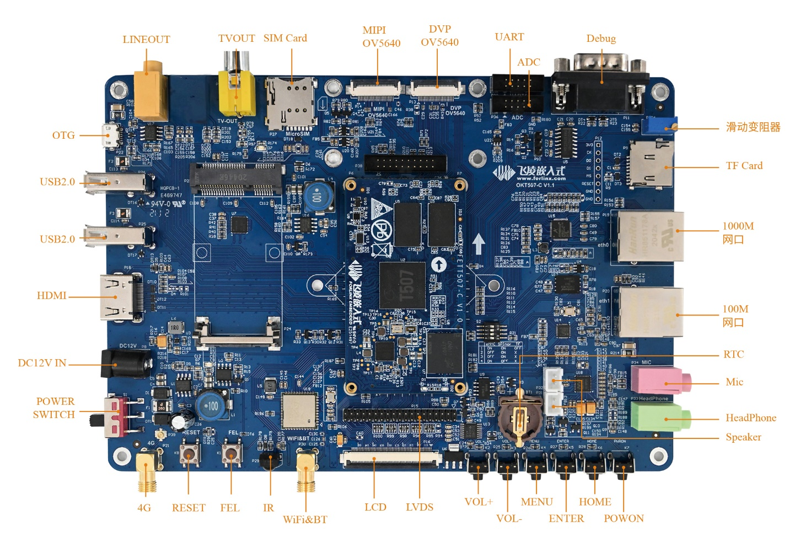
请阅读：
本软件手册中不再对硬件参数进行叙述，在参考本手册进行软件开发前请阅读“硬件资料\用户手册”路径下的“OKT507-C _硬件手册”，以了解产品命名规则和您所使用产品的硬件配置信息，这样有助于您对本产品的使用。
1.2 Linux 4.9.170系统软件资源介绍
设备 |
驱动程序源代码在内核中的位置 |
设备名 |
|---|---|---|
网卡驱动 |
drivers/net/ethernet/allwinner/ |
/sys/class/net/eth* |
LCD 背光驱动 |
drivers/video/fbdev/sunxi/disp2/disp |
|
HDMI驱动 |
drivers/video/fbdev/sunxi/disp2/hdmi2/ |
/dev/fb1 |
LED 驱动 |
drivers/leds/leds-gpio.c |
/sys/class/leds/ |
USB接口U盘 |
drivers/usb/storage/ |
/dev/sdx |
USB 4G |
drivers/usb/serial/ |
/dev/ttyUSB* |
USB Camera |
drivers/media/usb/uvc/uvc_video.c |
|
SD卡驱动 |
drivers/mmc/card/ |
/dev/block/mmcblk0pX |
LCD FrameBuffer |
drivers/video/fbdev/sunxi/disp2/disp/lcd |
/dev/fb0 |
串口驱动 |
drivers/tty/serial/sunxi-uart.c |
/dev/tty* |
看门狗驱动 |
drivers/watchdog/sunxi_wdt.c |
/dev/watchdog |
WIFI |
drivers/net/wireless/ |
wlan0 |
蓝牙驱动 |
drivers/bluetooth/ |
|
音频驱动 |
sound/soc/sunxi |
/dev/snd/ |
SPI控制器 |
drivers/spi/spi-sunxi.c |
|
TWI驱动 |
drivers/i2c/busses/i2c-sunxi.c |
|
PWM驱动 |
drivers/pwm/pwm-sunxi.c |
|
OV5640_DVP |
drivers/media/platform/sunxi-vin/modules/sensor/ov5640.c |
/dev/video* |
OV5640_MIPI |
drivers/media/platform/sunxi-vin/modules/sensor/ov5640_mipi.c |
/dev/video* |
TP2854M |
drivers/media/platform/sunxi-vin/modules/sensor/tp2854_mipi.c |
/dev/video* |
TP2855 |
drivers/media/platform/sunxi-vin/modules/sensor/tp2815_mipi.c |
/dev/video* |
GT911触摸驱动 |
drivers/input/touchscreen/gt911.c |
/dev/input/event* |
GT928触摸驱动 |
drivers/input/touchscreen/gt928.c |
/dev/input/event* |
TSC2007触摸驱动 |
drivers/input/touchscreen/tsc2007.c |
/dev/input/event* |
GPADC驱动 |
drivers/input/sensor/sunxi_gpadc.c |
/dev/input/event* |
LRADC按键驱动 |
drivers/input/keyboard/sunxi-keyboard.c |
/dev/input/event* |
RTC驱动 |
drivers/rtc/rtc-rx8010.c |
/dev/rtc0 |
IR驱动 |
drivers/media/rc/sunxi-ir-dev.c |
/dev/input/event* |
说明：驱动tp2815同时适配TP2855 MIPI转4模拟摄像头模块 以及 TP2855 MIPI转4模拟摄像头模块。
1.3 烧写及启动设置
OKT507板载一个BOOT拨码开关，支持TF卡和USB OTG烧写，eMMC、TF方式启动，使用拨码开关来区分（如下图所示为eMMC启动时拨码开关位置），具体烧写操作过程请参考“[烧写系统](https://forlinx-book.yuque.com/pxh4d1/ngtapw/zq4ceyo7z4iw07xi)”章节。
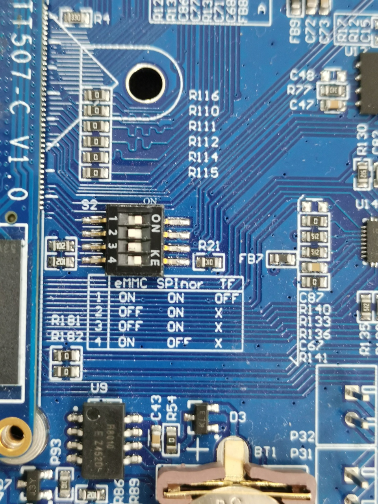
** 拨码** |
1 |
2 |
3 |
4 |
|---|---|---|---|---|
TF卡烧写 |
OFF |
OFF |
OFF |
OFF |
USB OTG烧写 |
ON |
OFF |
OFF |
ON |
eMMC启动 |
ON |
OFF |
OFF |
ON |
**注意：**T507开发板不支持SPI NOR启动。
02_快速开机启动
2.1 开机前的准备
OKT507开发板有串口登录和网络登录两种系统登录方式，系统开机前硬件准备：
12V3A DC电源线
调试串口线（串口登录使用）
开发板上的调试串口为DB9公头，用户可使用双母头交叉串口线或者USB转RS232串口线连接开发板和PC机，以查看开发板状态信息。
网线（网络登录使用）
屏幕，根据开发板接口连接屏幕（不需要显示的可以不接）
检查启动方式拨码开关
请检查您开发板上的拨码开关，确认已经拨到想要的启动方式，启动方式设置请参考“1.3 烧写及启动设置”
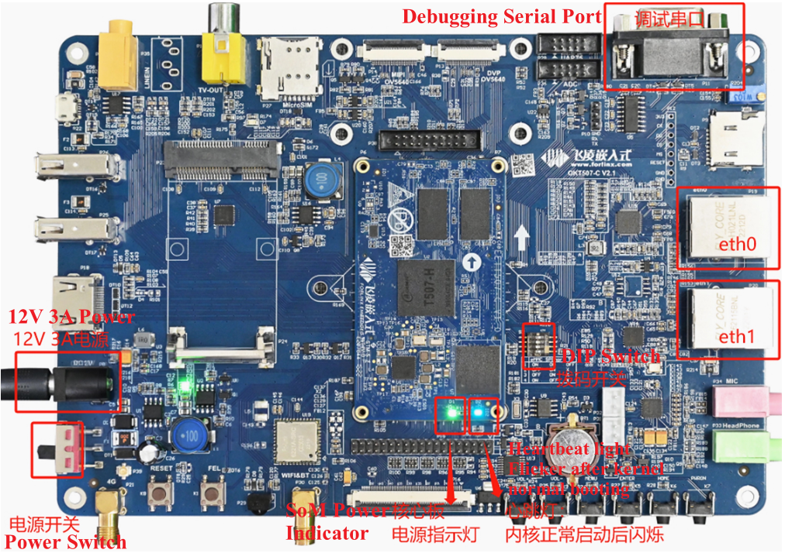
2.2 串口登录方式
2.2.1 串口登录
说明：
串口设置：波特率115200、数据位8、停止位1、无校验位、无流控制。
串口终端登陆为root用户，无密码，免账户登录。
软件需求：PC端Windows系统需要安装超级终端软件，超级终端软件有多种，可自行使用自己熟悉的串口终端软件。
以下以putty为例介绍终端的设置方式：
**步骤一：**使用串口线连接开发板和PC机，确认连接电脑的串口端口号，从“设备管理器”中查看串口端口号，以电脑实际识别的端口号为准。
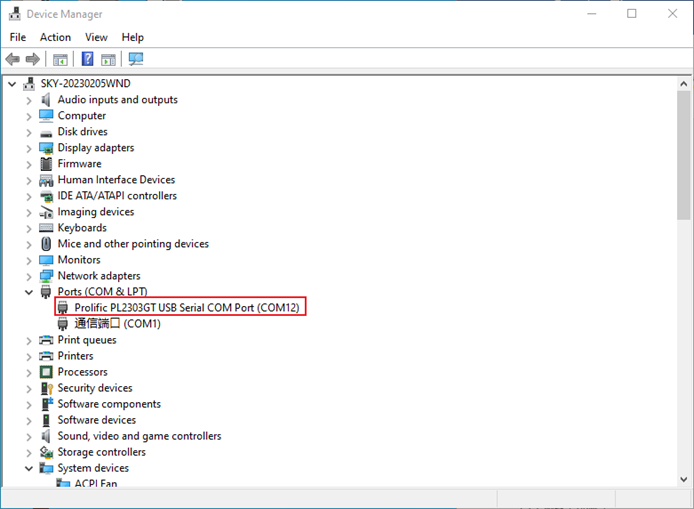
**步骤二：**打开putty并设置，serial line根据使用的电脑COM口设置，波特率115200
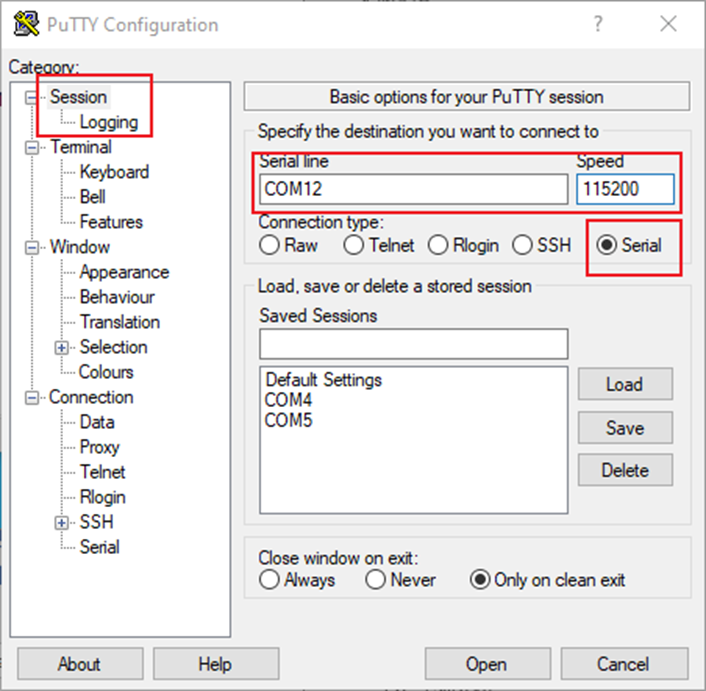
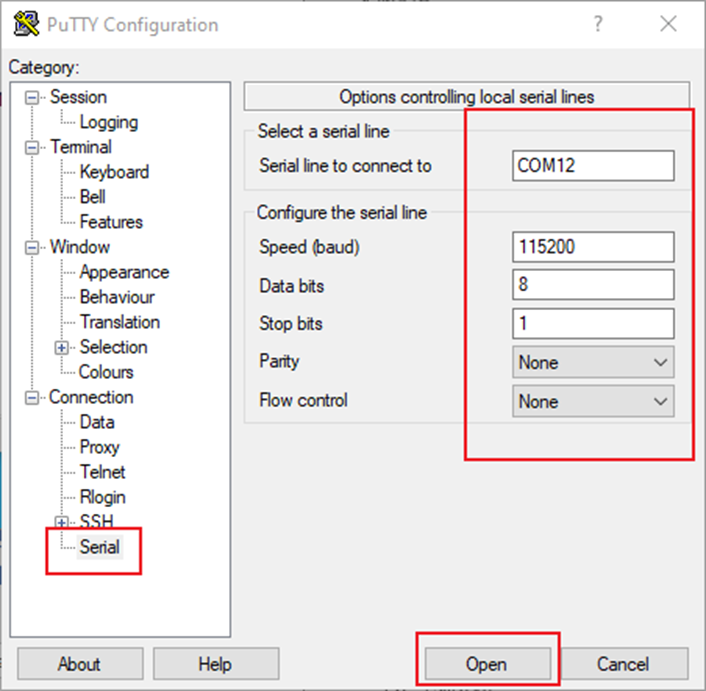
**步骤三：**打开开发板的电源开关，串口会有打印信息输出，直到出现root@forlinx~/$，完成启动过程，系统默认为root账户，无密码，不用输入登录信息。
2.2.2 串口登录常见问题
电脑端口没有串口的可以通过USB转串口线与开发板连接，使用USB转串口线接需要安装对应的驱动程序。
建议使用质量好串口线以避免出现乱码情况。
2.3 网络登录方式
2.3.1 网络连接测试
说明：
默认出厂eth0的IP为192.168.0.232，eth1未做设置。
测试时电脑和开发板需要在同一网段
在进行网络登录前，需要先确保电脑和开发板直连的网络连接正常，可通过ping指令测试电脑和开发板的连接状态。具体方法操作如下：
1、将开发板的eth0和电脑通过网线连接，给开发板上电，内核启动后核心板上会有蓝色心跳灯闪烁，与电脑连接的网卡在正常启动后网卡灯快速闪烁，此时可以测试网络连接。
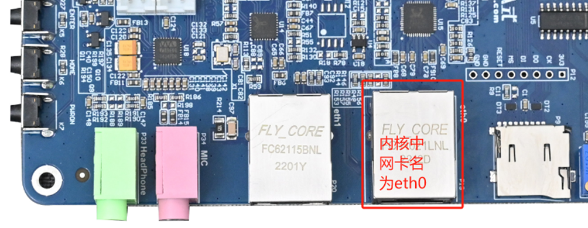
2、关闭电脑防火墙（此处不作关闭防火墙的介绍，电脑通用操作），打开电脑的运行命令
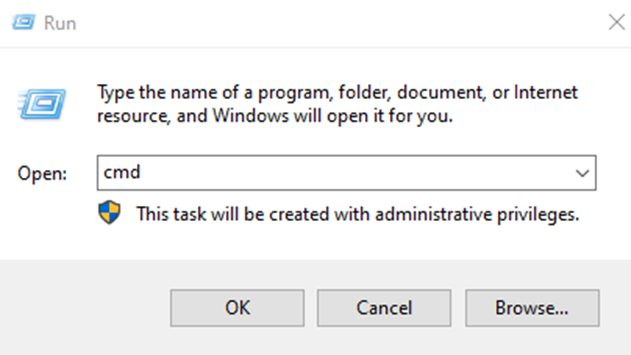
3、使用cmd打开电脑管理员界面，使用ping指令测试电脑和开发板的网络连接状态
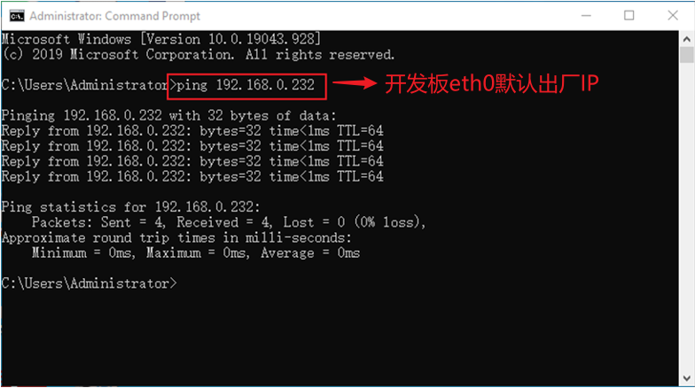
有数据返回，网络连接正常。
2.3.2 SSH服务器
说明：
默认出厂使用SSH登录的账户root，密码root。
默认出厂eth0的IP为192.168.0.232。
可用scp进行文件传输。
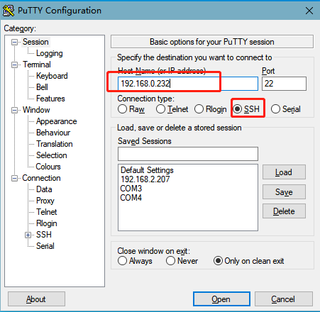
点击“Open”,出现如下对话框，点击“是”进入登录界面

Login as：root
root@192.168.0.232's password: //按照提示输入开发板root账户的密码root
root@forlinx~/root$
可以使用WinSCP（软件需要自行安装）拷贝文件
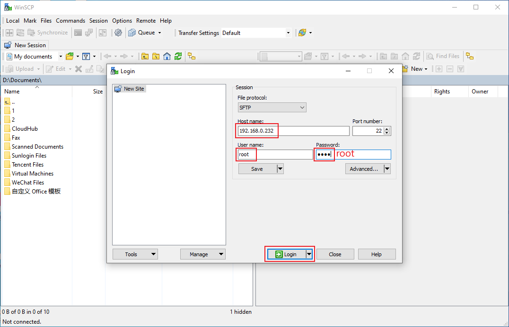
2.4 屏幕切换
说明：
默认为HDMI和LCD（分辨率1024x600）双屏异显，HDMI显示LOGO，LCD显示QT主界面。
屏幕切换控制支持内核设备树指定、uboot菜单动态控制方式；QT界面UbootMenu应用程序。
OKT507出厂默认是双屏异显， HDMI显示Logo。
LCD显示主界面：
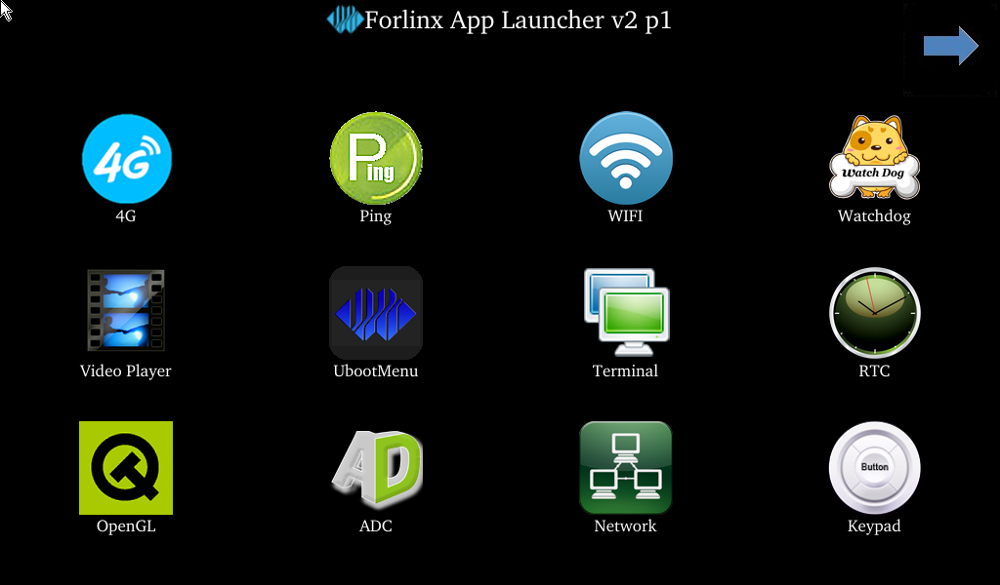
OKT507支持RGB、HDMI等多种屏幕接口，同时可以进行两个屏幕的同显和异显，可灵活指定HDMI接口支持4K输出。目前屏幕切换控制方式有三种：内核设备树指定、uboot菜单动态控制；QT界面UbootMenu应用程序。
目前OKT507-C支持HDMI、LVDS 1280x800、LCD7 1024x600、LCD7 800x480 电容屏、LCD7 800x480 电阻屏。
2.4.1 内核设备树指定方式
设备树路径为：linux-4.9/arch/arm64/boot/dts/sunxi/OKT507-C-Common.dtsi
该方式可设置系统默认屏幕显示为所期望的方式，不用连接串口终端选择，适合量产。但需要手工修改设备树，重新生成一次系统镜像。该方式优先级高于uboot菜单动态控制。
内核源码中，打开设备dts文件，找到如下节点：
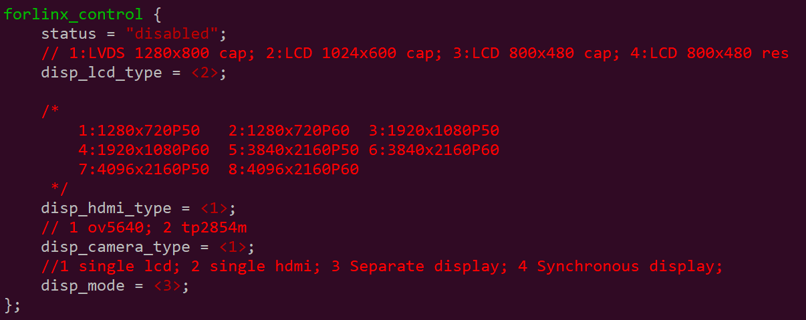
参数说明：
含义 |
|
|---|---|
status |
描述节点状态：disabled为关闭节点，okay使能节点 |
disp_lcd_type |
描述lcd接口类型 |
disp_hdmi_type |
描述HDMI屏分辨率 |
disp_camera_type |
描述Camera MIPI |
disp_mode |
描述显示类型： 1代表单显LCD，2代表单显hdmi，3代表异显，4代表同显 |
其中disp_lcd_type（描述lcd接口类型）代表的含义如下：
参数 |
含义 |
|---|---|
4 |
7寸800x480电阻屏 |
3 |
7寸800x480电容屏 |
2 |
7寸1024x600电容屏 |
1 |
10.1寸1280x800电容屏 |
举例：
配置成同显模式，主屏为电容屏1280x800，副屏为HDMI接口屏 4096x2160P50。
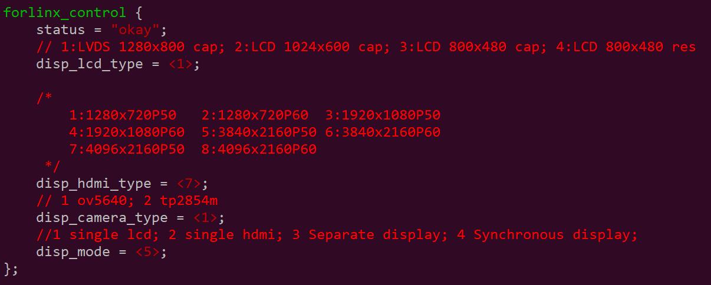
用户根据需求更改设置参数，保存后，需要重新编译生成镜像。
2.4.2 uboot菜单动态控制方式
该方式在现有已支持屏幕的基础上不需要重新编译和烧写，即可切换屏幕。
2.4.2.1各级菜单介绍
1、一级菜单
在uboot自启动过程中串口终端按下空格键，即可弹出控制选项，显示一级菜单：
---------------------------------------------
0: Exit to console
1: Reset
2: Set Lcd Display
3: Set HDMI Display
4: Set Camera Type
5: Set Display mode
---------------------------------------------
菜单功能选项如下表：
序号 |
功能选项 |
|---|---|
0 |
进入到boot的命令行模式 |
1 |
开发板重启 |
2 |
进入LCD屏幕控制子菜单 |
3 |
进入HMDI控制子菜单 |
4 |
进入Camera控制子菜单 |
5 |
进入控制显示模式子菜单 |
2、二级菜单选择LCD屏类型
一级菜单中选择“2”，进入二级菜单，如下图：
---------------------------------------------
uboot_disp_mode:single lcd
0:Exit to console
1:LVDS 1280x800 cap
2:LCD 1024x600 cap
3:LCD 800x480 cap
4:LCD 800x480 res
c:NULL
---------------------------------------------
菜单功能选项如下表
序号 |
功能选项 |
|---|---|
0 |
退出，返回上级菜单 |
1 |
选择 10.1寸1280x800电容屏 |
2 |
选择 7寸1024x600电容屏 |
3 |
选择 7寸800x480电容屏 |
4 |
选择 7寸800x480电阻屏 |
c |
不设参数 |
3、二级菜单选择HDMI类型
一级菜单选择3后，为HDMI屏幕配置菜单，如下
---------------------------------------------
Current Secondary Display is hdmi 1280x720P50
0:Exit to console
1:1280x720P50
2:1280x720P60
3:1920x1080P50
4:1920x1080P60
5:3840x2160P50
6:3840x2160P60
7:4096x2160P50
8:4096x2160P60
c:NULL
---------------------------------------------
菜单功能选项如下表
序号 |
功能选项 |
|---|---|
0 |
退出，返回上级菜单 |
1 |
屏幕分辨率是1280x720 ，帧数50 |
…… |
…… |
c |
不设参数 |
4、二级菜单选择Camera类型
一级菜单选择4后，为Camera配置菜单，如下
---------------------------------------------
Current Camera is OV5640
0:Exit to console
1:Set Camera OV5640
2:Set Camera TP2854M
3:Set Camera TP2815
c:NULL
---------------------------------------------
菜单功能选项如下表
序号 |
功能选项 |
|---|---|
0 |
退出，返回上级菜单 |
1 |
设置Camera MIPI为OV5640 |
2 |
设置Camera MIPI 为TP2854M |
3 |
设置Camera MIPI 为TP2855\TP2815 |
c |
不设参数 |
5、二级菜单选择显示模式类型
一级菜单选择5后，为显示模式配置菜单，如下
---------------------------------------------
Current display is mode: Separate display primary lcd, secondary hdmi
0:Exit to console
1:Single lcd display
2:Single hdmi display
3:Separate display
4:Synchronous display
---------------------------------------------
菜单功能选项如下表
序号 |
功能选项 |
|---|---|
0 |
退出，返回上级菜单 |
1 |
设置单显，LCD屏显示 |
2 |
设置单显，HDMI屏显示 |
3 |
设置异显，主屏为LCD，副屏为HDMI |
4 |
设置同显，主屏为LCD，副屏为HDMI |
2.4.2.2屏幕切换方法
以下以切换为LVDS 1280x800单屏显示为例进行说明：
在uboot自启动过程中串口终端按下空格键，进入到uboot菜单界面：
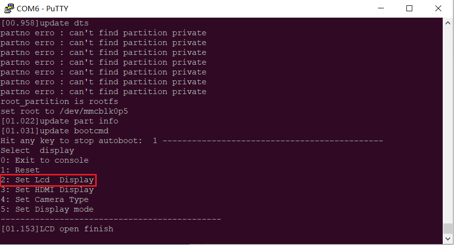
选择2，进入LCD屏幕控制子菜单
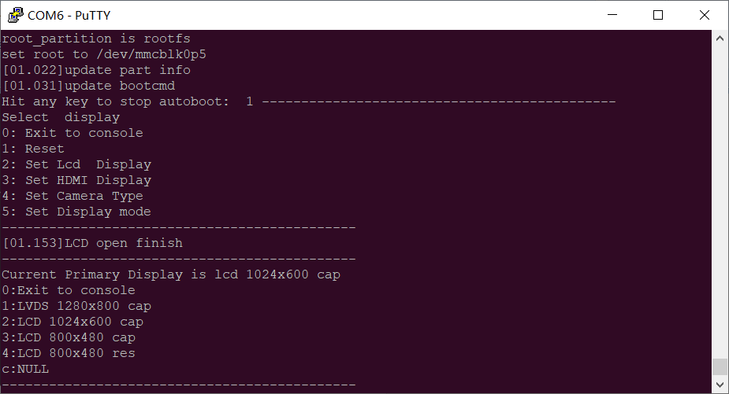
如上图选择1，进入选择LCD配置子菜单
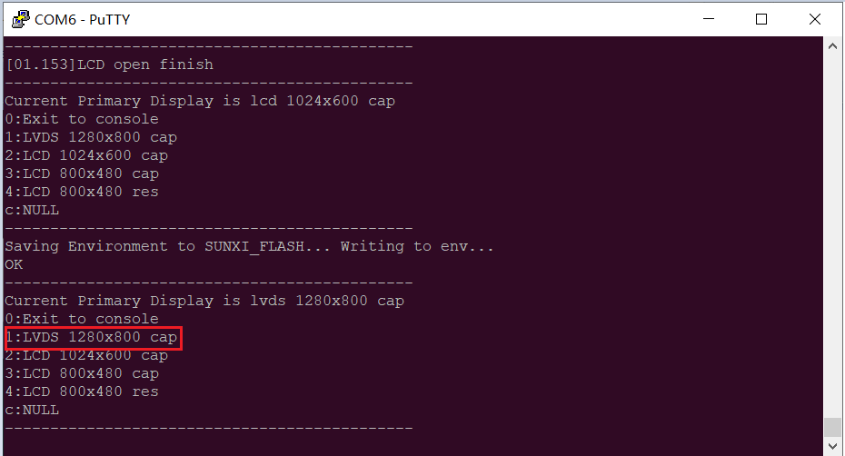
选择1，设置为LVDS 1280x800，设置完后在选择0，返回上级菜单
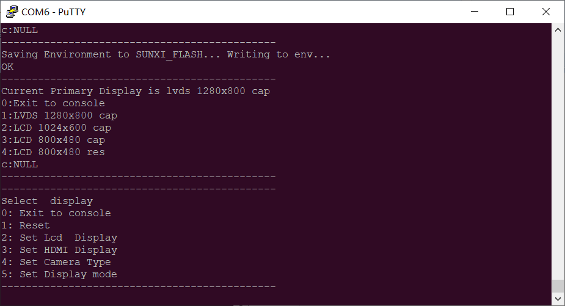
选择5，进入显示模式参数配置菜单
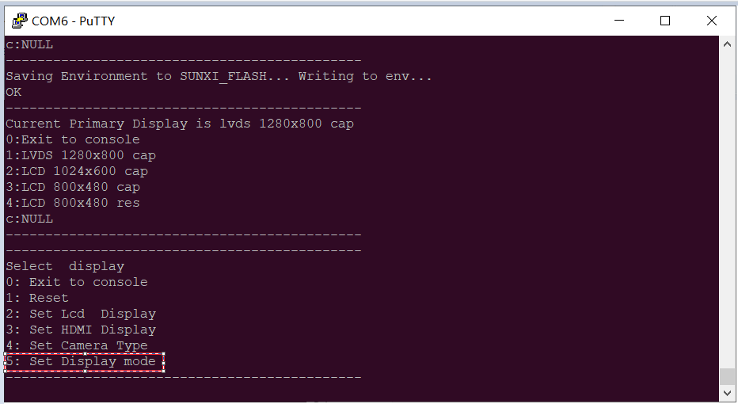
如上图选择5，进入显示模式配置子菜单
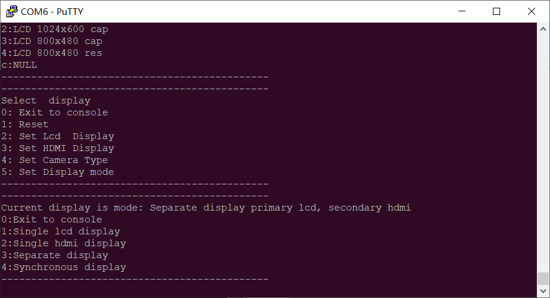
选择1，设置LCD 单显，设置完后在选择0，返回上级菜单
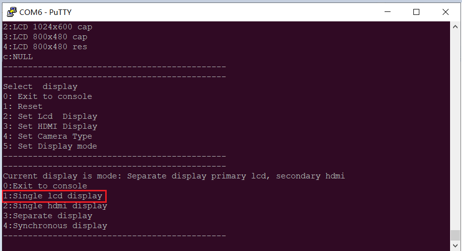
选择完成后，按复位键重新启动（或者根据菜单提示，返回到第一级uboot菜单选择reboot），重新启动后生效。
2.5 电阻屏重新校准
当您使用电阻屏时，需要默认使用tslib校准，如需重新校准请执行：
root@forlinx~/$ /usr/bin/ts_calibrate
校准文件保存在/etc/pointercal
2.6 系统分区
下面表格是Linux操作系统的eMMC存储器分区信息：
分区索引 |
名称 |
大小/MB |
文件系统 |
内容 |
|---|---|---|---|---|
mmcblk0p1 |
Loader |
32 |
FAT32 |
boot-resource.fex |
mmcblk0p2 |
Env |
16 |
RAW |
env.fex |
mmcblk0p3 |
boot |
64 |
RAW |
boot.fex |
mmcblk0p4 |
rootfs |
7040 |
Ext4 |
rootfs.fex |
使用df命令查看系统上磁盘使用情况，df –m是以MB为单位显示文件系统磁盘空间使用情况。如下图为出厂默认磁盘使用情况（使用的qt文件系统），仅供参考，具体参数请以实际为准。
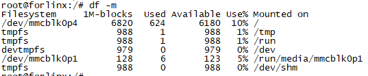
使用free命令查看内存使用情况，如下图为不接任何外设情况下的内存使用情况，仅供参考，具体参数请以实际为准。
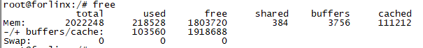
2.7 系统关闭
一般情况下直接关闭电源即可，如果有数据存储、功能使用等操作，操作过程中不要随意断电，以防出现文件不可逆损坏，只能重新烧写固件。未确保数据完全写入，可输入 sync 命令完成数据同步后再关闭电源。
开发板重启可执行命令reboot。也可以硬件重启，按K8（RESET）键或直接断电重启，长按PWRON可以开关机。
注意：用户依据核心板设计的产品，若在使用中存在意外掉电导致系统异常的情景，可在设计中加入掉电保护等措施。
03_OKT507平台界面功能使用及测试
说明：
用户使用屏幕和qt文件系统时进行该章节操作，若不用QT操作，可跳过该章节。
本章节着重描述qt中的功能，测试时默认设备连接正常，驱动加载正常，建议完成命令行功能测试后在测试界面功能。
QT测试程序源码路径：源码（OKT507-linux-sdk20）/platform/framework/auto/fltest_qt_demo
开发板文件系统中测试程序路径：/usr/bin
此章节主要说明开发板外扩接口的在QT界面中使用方法，测试程序仅用于参考，用户使用时需要根据实际情况进行调整。
3.1 界面功能简介
开发板启动后桌面显示如下：
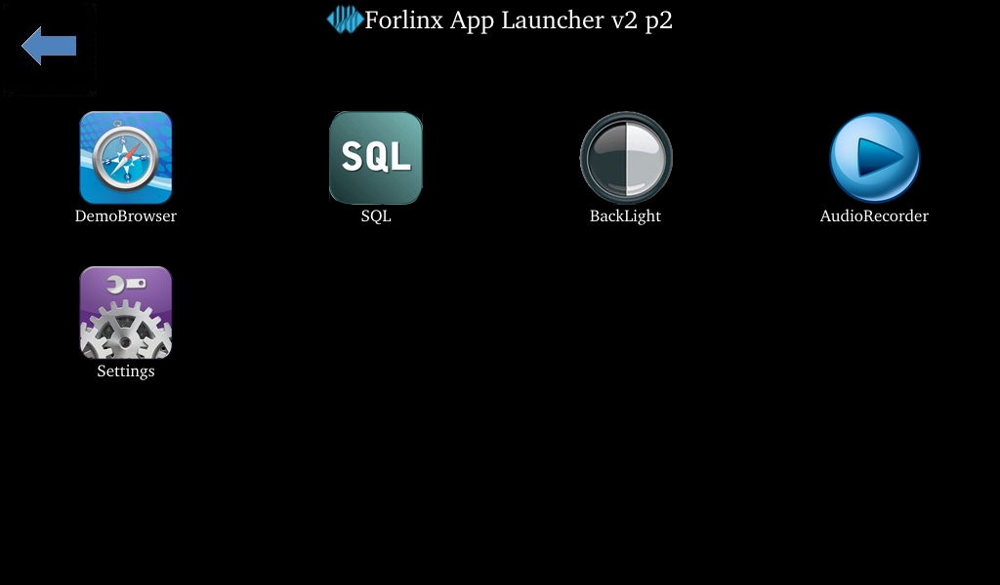
3.2 音视频播放体验
图标：
点击音视频播放图标进入视频播放器，可以播放音乐和视频。默认声音是从lineout输出（输出接口可选），lineout可以接耳机或者音箱。

点击左侧的视频播放器图标，进入视频播放器界面，点击搜索按钮，选择 /forlinx/media/1080p_60fps_h264.mp4 或者/forlinx/media/1080p_60fps_h265.mp4进行播放测试。
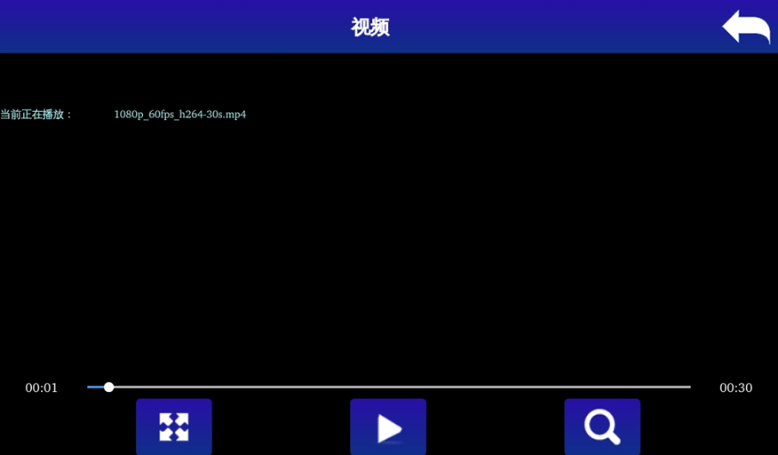
点击右侧音频播放器图标：
代表使用LINEOUT播放音乐，代表使用HeadPhone播放音乐，
代表使用HDMI播放音乐。
3.3 OpenGL测试
图标：
OKT507最高支持OpenGL ESv3.2，点击OpenGL图标进行测试。
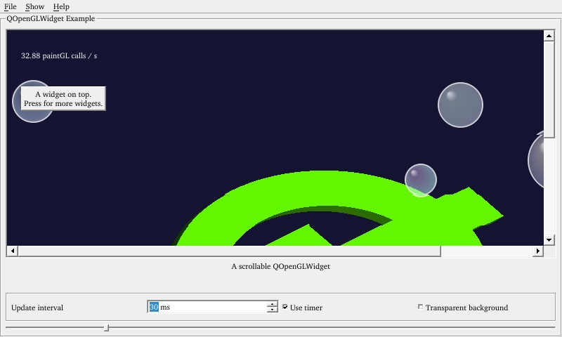
点击左上角File，选择exit，退回主界面。
3.4 网络配置测试
说明：
出厂默认仅设置eth0网卡为STATIC模式，eth1网卡未配置；
设置的ip等信息会被保存至系统的相关配置文件（/etc/network/interfaces）中，因此每次重启都会使用本次设置的网络信息。
图标：
点击网络配置图标进入界面程序，支持STATIC和DHCP两种模式。
STATIC模式
点击网络配置图标，选择STATIC，如下图：可配置ip地址、子网掩码、网关、dns，设置完参数后点击“Apply and Restart Network”。
相关参数 |
含义 |
|---|---|
interface |
设置网卡 |
getmask |
设置子网掩码 |
gateway |
设置网关 |
dns |
设置DNS |
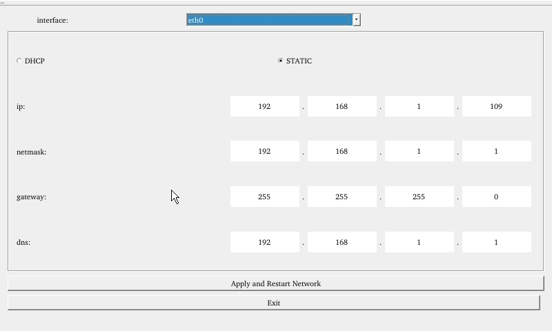
DHCP模式界面如下：
注意：必须在可以自动分配ip的路由器下进行测试
选中DHCP，在interface中选中需要配置的网卡设备，点击界面下方的”Apply and Restart Network”，即自动重启网络并自动获取到ip。
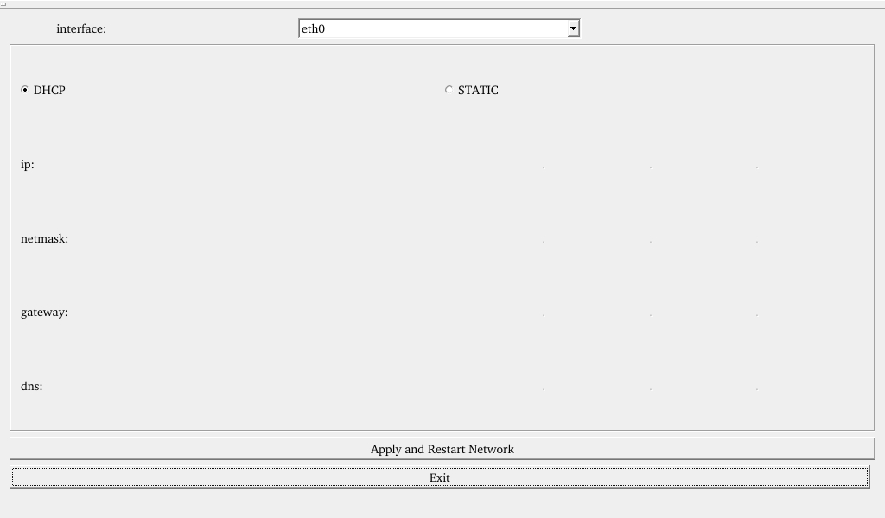
3.5 浏览器测试
图标：
点击浏览器图标进入browser，在使用时请保证网络通畅，访问外网前需保证dns可用，浏览器启动时默认访问飞凌嵌入式官方网站，界面如下：
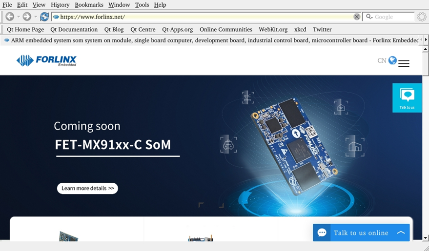
**注意：**如果开发板的时间异常会导致证书问题。
3.6 4G测试
图标：
“4G”测试程序用于测试OKT507外置4G模块(ME909S和EC20)。测试前请将开发板断电，接入4G模块，插入SIM卡（注意SIM卡方向），启动开发板打开测试应用，本测试以EC20为例：
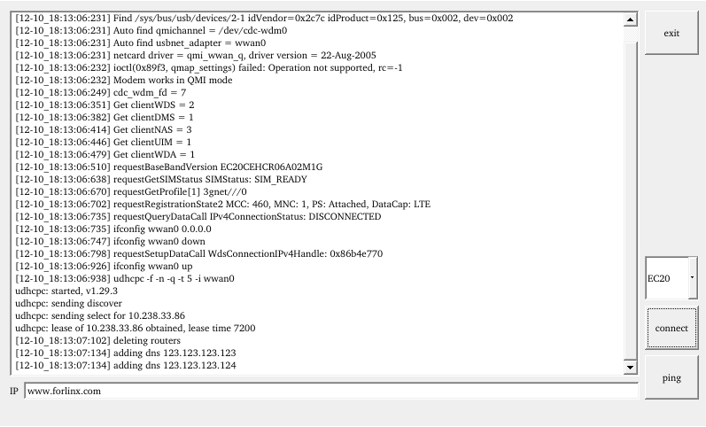
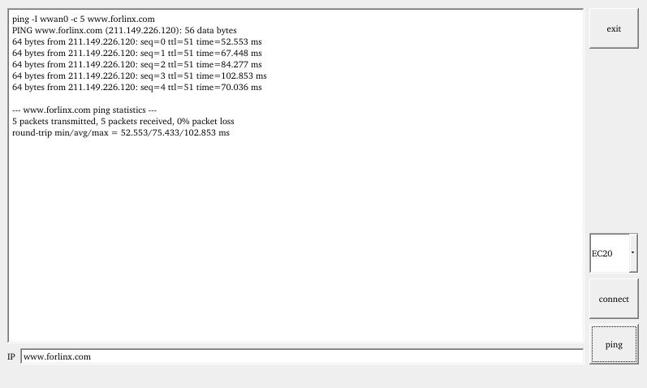
点击connect按钮，程序将自动进入拨号流程并获取IP设置DNS等，耐心等待几秒钟后，点击ping按钮进行测试。
3.7 UART测试
图标：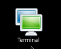
本次测试采用UART5(ttyS5)，通过开发板的UART和电脑串口工具软件之间的数据收发，来进行串口测试。
1、开发板和电脑通过TTL转USB模块连接好后，给开发板上电，在电脑设备管理器查看识别为COM4（用户以自己实际识别的COM口设置参数）
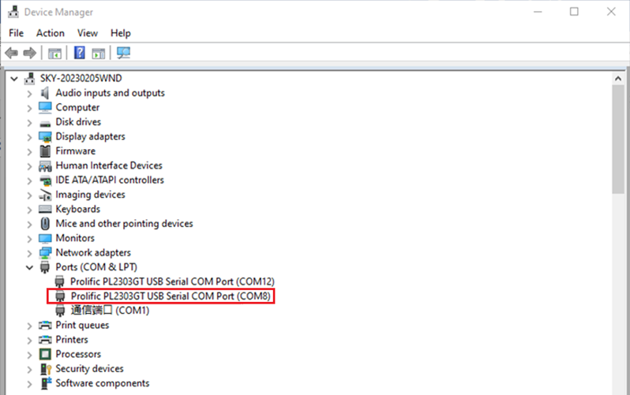
2、打开电脑串口工具，设置串口参数：波特率115200、8位数据位、1位停止位、无校验、无流控制，并打开串口。
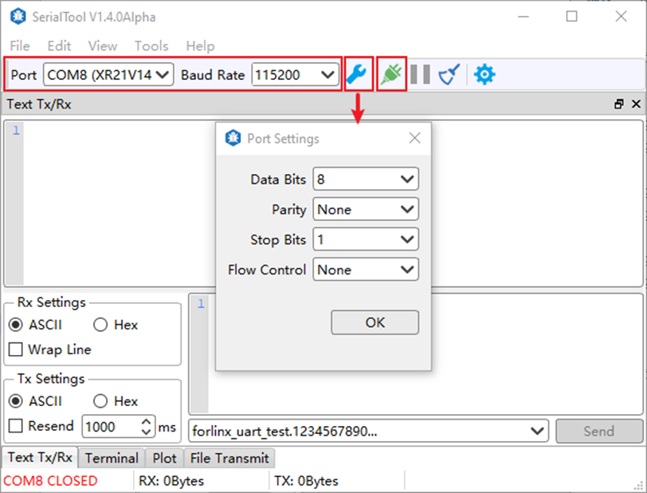
3、点击UART测试图标，进入如下界面，进行串口参数设置：
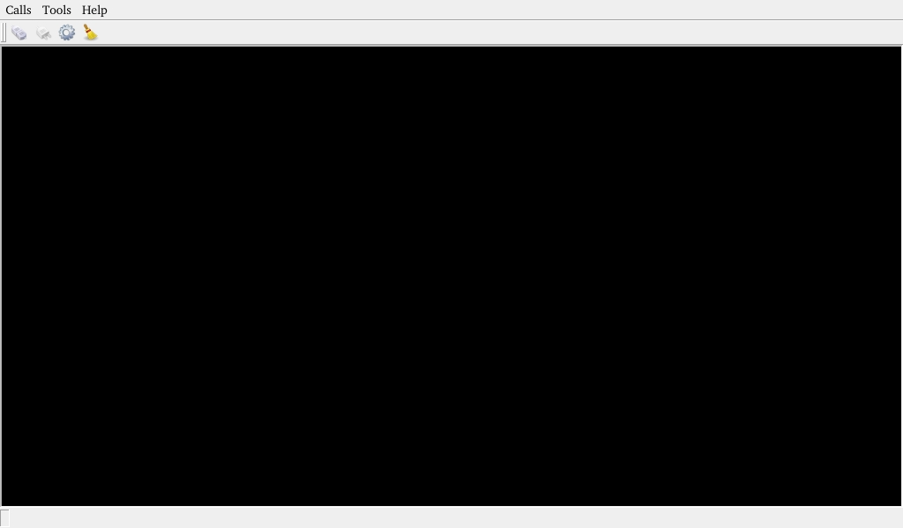
点击左上角 设置按钮，设置串口参数与电脑端串口工具参数一致，如下图：
设置按钮，设置串口参数与电脑端串口工具参数一致，如下图：
相关参数 |
含义 |
|---|---|
Select Serial Port |
设置串口（选择UART5，即ttyS5） |
BaudRate |
设置波特率（115200） |
Data bits |
设置数据位（8位） |
Parity |
设置校验位（无校验） |
Stop bits |
设置停止位（1位） |
Flow control |
设置流控（无流控） |
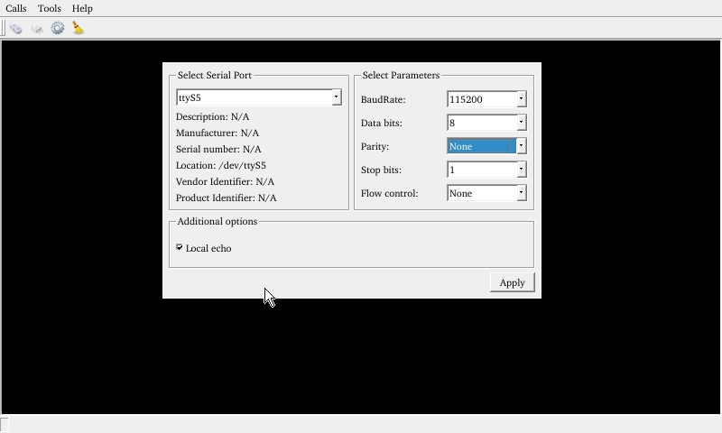
设置完串口参数后，点击左上角的连接按钮，此时测试程序可以进行数据收发测试。
4、此时电脑端串口工具发送：“forlinx_uart_test.1234567890…”，测试界面会接收到数据：
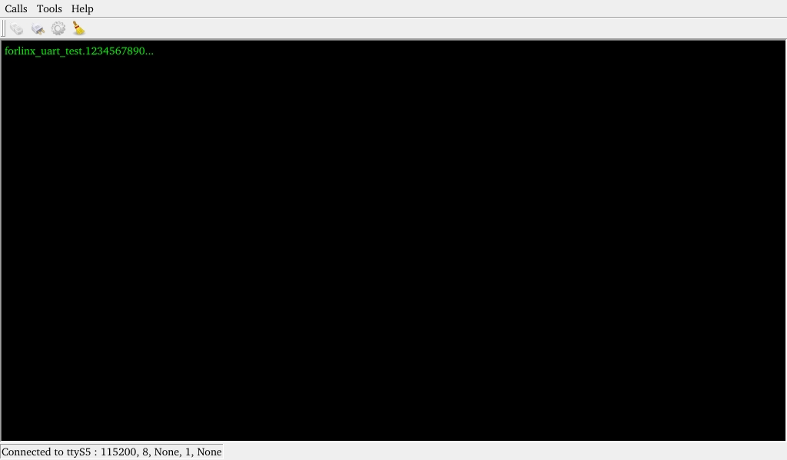
点击测试界面会弹出软键盘，输入“abcdefg”，按软键盘的回车，向电脑端串口工具发送数据：
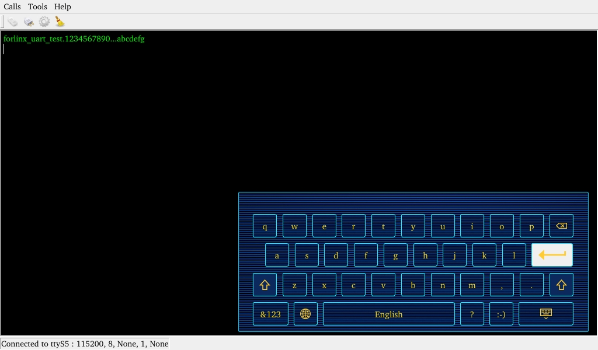
电脑端串口工具接收到数据：
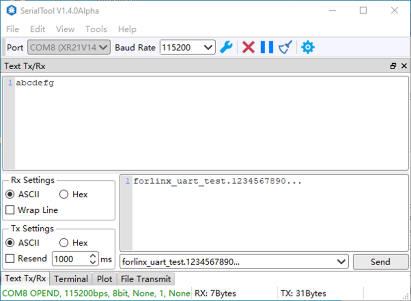
3.8 ADC测试
图标：
在OKT507-C的底板上，GPADC 3通道连接了一个可变电阻，可变电阻的阻值，数值会发生相应的变化。最大值4096对应电压1.8V。点击ADC测试图标，通过调节可变电阻对GPADC 3通道进行测试
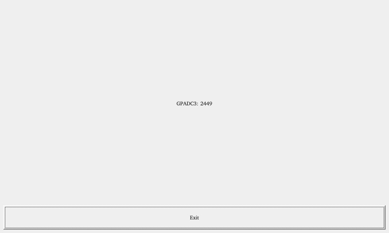
3.9 WIFI测试
图标：
“WIFI”是一款配置wifi的工具，可以测试wifi的STA模式。
1、点击图标，进入测试界面，下拉菜单选择相应的模块，SSID栏中输入需要使用wifi连接的路由器名称，PAWD栏输入路由器密码，点击”connect”，即可通过wifi连接路由器：
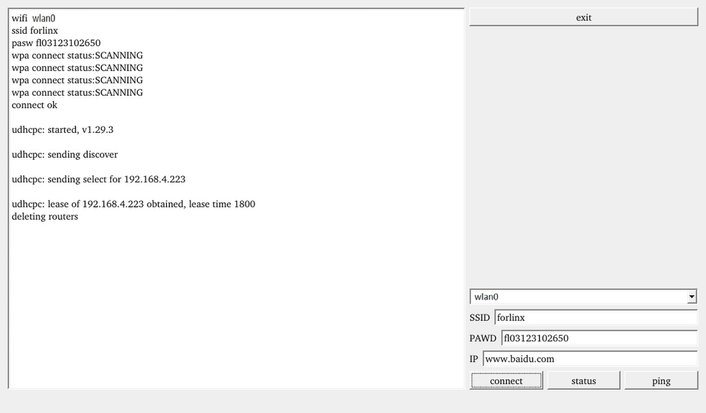
2、连接成功后，设置IP后可点击”ping”进行网络测试
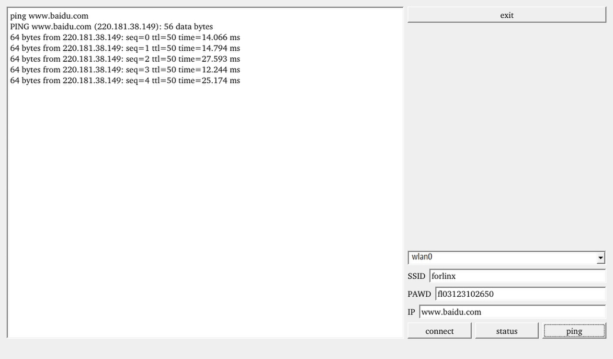
3.10 RTC测试
注意：确保板子上已经安装了纽扣电池，并且电池电压正常
图标：
RTC 测试是通过测试软件设置时间后，断电重启，再次运行测试软件，查看RTC 时钟是否同步。
运行RTC测试软件 RTC，可查看和设置当前的系统时间，界面如下：
点击”set”后，即可进行时间的设置，设置完毕点击保存，即可设置完成。然后可以断电，过段时间再上电，再次运行 RTC测试软件自动读取时间，可以看到 RTC 时间已同步，RTC测试正常
3.11 按键测试
图标：
“Keypad”用于测试平台自带按键是否可用，通过检测按键按下后相应按键是否会变蓝判断按键功能是否正常，界面如下：
OKT507平台有五个物理按键VOL-、VOL+、MENU、ENTER、HOME分别对应V+、V-、Home、Menu、Enter，当按下按键时测试应用中的对应按键会变为蓝色，说明按键功能正常。
**注意：**目前该应用只能在按键按下的时候上报键值。
3.12 看门狗测试
图标：
“WatchDog”是用来测试看门狗功能是否正常的应用，界面如下：
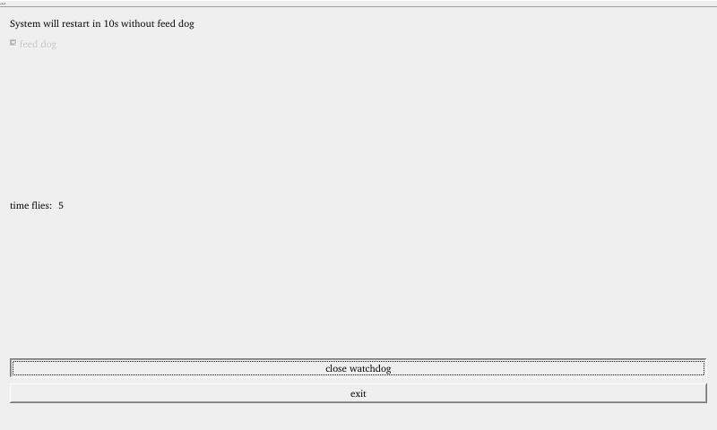
勾选”feed dog”，点击”open watchdog”按键，此时看门狗功能会被启动，程序会进行喂狗操作，正常情况下系统不会重启；
取消勾选”feed dog”时，点击”open watchdog”按键，看门狗功能会被启动，程序不进行喂狗操作，在打开看门狗约10s后，系统进入重启，说明看门狗功能正常。
3.13 Ping测试
图标：
“Ping”是网络测试常用命令ping的界面版应用，界面如下：
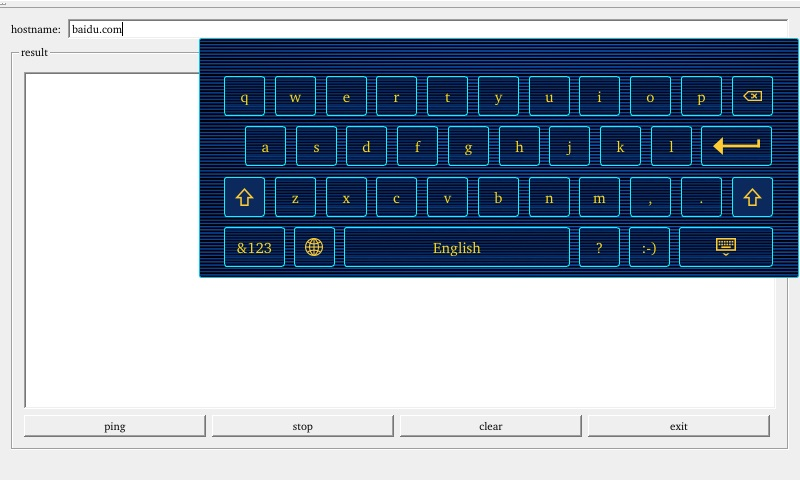
在hostname一栏中写人需要ping的目标ip，点击”ping”键后，result栏中会提示ping的结果，如图中所示说明彼此网络通畅，点击stop可停止ping测试，点击”clear”清空result中的信息。
3.14 Camera测试
图标：
点击图标进入camera测试程序，测试程序兼容mipi、dvp接口。.
请先选择camera video设置设备节点，camera resolution设置分辨率， 点击”start”按钮开始采集camera，点击”stop”按钮停止采集camera， 点击”picture”按钮拍照，拍照图片保存路径以及文件名字。
**注意：**请根据实际情况选择camera设备和分辨率
以ov5640_mipi摄像头为例，进行camera测试。
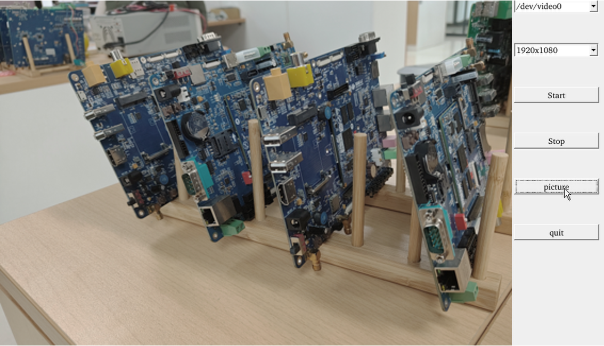
点击”picture”按钮拍照，文件保存目录为/root/，请使用windows自带看图工具查看.
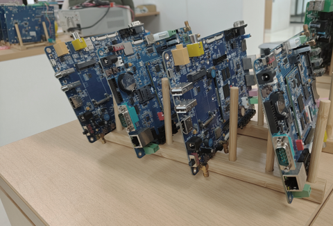
3.15 背光测试
图标：
“BackLight”是lcd背光调整应用，左右调节进度条，可以调节背光亮度，点击打开后界面如下：
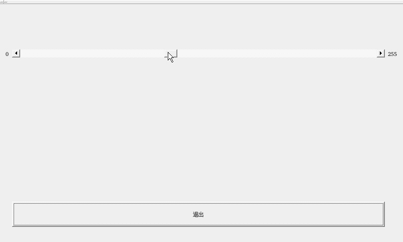
拖动界面中的滑块即可设置Lcd背光亮度，0级为弱背光，255（150级）为最高亮度。
3.16 录音测试
图标：
在进行录音测试前，请将准备好的麦克插入mic接口，点击图标，进入录音测试应用，可用来测试声卡录音功能是否正常。
选择保存录音文件位置，按钮”开始”代表 开始录音，按钮”停止”代表停止录音，界面如下：
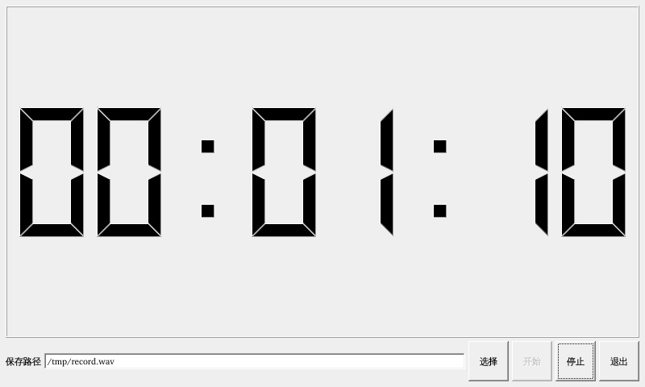
3.17 CPU频率配置测试
OKT507 CPU主频最大1.5Ghz，默认情况下CPU会根据负载动态调整主频，也可以通过设置固定CPU主频率。
点击桌面设置图标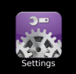进入下一级菜单：
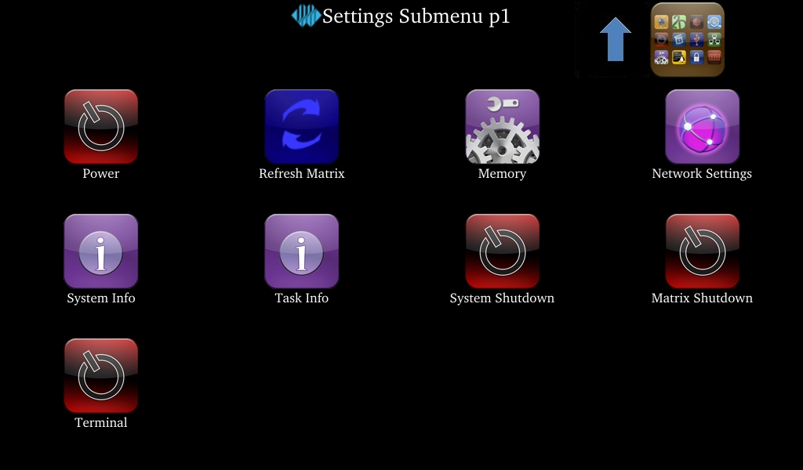
点击图标，进入CPU主频设置页面，
Set OnDemand Governor：按需动态调整主频
Set Userspace Governor：用户态设置主频
Set Frequency：设置核主频
以设置主核频率为例：先点击”Set Userspace Governor”，弹出对话框选择“run”，再点击”Set Frequency”进行设置固定频率。（点击右上角箭头返回上一级目录，点击右上角图标返回主目录）。
根据需求选择对应的频率进行设置。
3.18 SQLite3数据库测试
图标：
点击图标进入数据库测试界面
选中需要修改那一栏，修改完成点击空白部分区域。
3.19 UBOOT菜单配置测试
点击图标进入UBOOT菜单配置测试界面。
在UBOOT菜单配置测试程序中，可以配置LCD屏分辨率、HDMI分辨率、摄像头设备、显示模式等。
LCD屏配置界面如下：
HDMI配置界面如下：
摄像头配置界面如下：可以选择使用OV5640MIPI摄像头或者TP2854M四合一MIPI模拟摄像头。
显示模式配置界面如下：四个选项分别表示：单显LCD，单显HDMI，异显，同显。
配置完成后退出程序，然后重启开发板，设置即可生效。
**注意：**在设备树linux-4.9/arch/arm64/boot/dts/sunxi/OKT507-C-Common.dtsi 文件里forlinx_control节点设置成”okay”之后使用UbootMenu应用配置无效。
04_OKT507命令行功能测试
OKT507平台内置了丰富的命令行工具可供用户使用。
测试程序源码路径：用户资料/linux/源码（OKT507-linux-sdk/platform/framework/auto/fltest_cmd_demo）
测试程序路径：/usr/bin
4.1 系统信息查询
查看内核和cpu信息，输入如下命令：
root@forlinx~/$ uname -a
Linux t507 4.9.170 #2 SMP PREEMPT Thu Aug 12 02:42:48 UTC 2021 aarch64 GNU/Linux
查看操作系统信息：
root@forlinx~/$ cat /proc/cpuinfo
查看环境变量信息：
root@forlinx~/$ env
4.2 调频测试
说明：此过程以cpu0为例操作，实际过程cpu1、cpu2、cpu3会同时改变。
1、当前内核中支持的所有cpufreq governor类型：
root@forlinx~/$ cat /sys/devices/system/cpu/cpu0/cpufreq/scaling_available_governors
interactive conservative ondemand userspace powersave performance schedutil
其中userspace表示用户模式，在此模式下允许其他用户程序调节CPU频率。
2、查看当前CPU支持的频率档位
root@forlinx~/$ cat /sys/devices/system/cpu/cpu0/cpufreq/scaling_available_frequencies
480000 600000 792000 1008000 1200000 1512000
3、设置为用户模式，修改频率为480000：
root@forlinx~/$ echo userspace > /sys/devices/system/cpu/cpu0/cpufreq/scaling_governor
root@forlinx~/$ echo 480000 > /sys/devices/system/cpu/cpu0/cpufreq/scaling_setspeed
查看修改后当前频率：
root@forlinx~/$ cat /sys/devices/system/cpu/cpu0/cpufreq/cpuinfo_cur_freq
480000
4.3 温度测试
查看温度值：
root@forlinx~/$ cat /sys/class/thermal/thermal_zone0/temp
67049
温度值即为67℃。
4.4 DDR带宽测试
root@forlinx~/$ memory_bandwidth.sh
打印信息如下：
OKT507-C的DDR3带宽如上图所示，读带宽大约1480M/s，读写带宽大约1000M/s。
4.5 看门狗测试
看门狗是嵌入式系统中经常用到的功能，OKT507中看门狗的设备节点为/dev/watchdog 。本测试提供了两种测试程序，用户根据实际情况选择一种测试。
启动看门狗，设置复位时间10s，并定时喂狗
使用fltest_watchdog，此命令会打开看门狗并执行喂狗操作，因此系统不会重启
root@forlinx~/$ fltest_watchdog
Watchdog Ticking Away!
使用ctrl+c结束测试程序时，停止喂狗，看门狗处于打开状态，10s后系统复位;
若不想复位，请在结束程序之后10s内输入关闭看门狗命令：
root@forlinx~/$ fltest_watchdog –d //关闭看门狗
启动看门狗，设置复位时间10s，不喂狗
执行命令fltest_watchdogrestart, 此命令会打开看门狗，但不执行喂狗操作，系统会在10s后重启.
root@forlinx~/$ fltest_watchdogrestart
4.6 RTC功能测试
注意：确保板子上已经安装了纽扣电池，并且电池电压正常
RTC 测试，主要通过使用 date 和 hwclock 工具设置软、硬件时间，测试当板子断电再上电的时候，软件时钟读取 RTC 时钟是否同步
root@forlinx~/$ date -u 072216162021.00 //设置软件时间
Thu Jul 22 16:16:00 UTC 2021
root@forlinx~/$ hwclock -w //将软件时间同步到硬件时间
root@forlinx~/$ hwclock -r //显示硬件时间
Thu Jul 22 16:16:14 2021 0.000000 seconds
然后给板子断电再上电，进入系统后读取系统时间，可以看到时间已经同步。
root@forlinx~/$ date
Thu Jul 22 16:16:30 UTC 2021
4.7 按键测试
使用fltest_keytest命令行工具进行按键测试，目前fltest_keytest支持底板上5个按键VOL+、VOL-、MENU、ENTER、HOME的测试，键码分别为115、114、139、28、172。
执行如下命令：
root@forlinx~/$ fltest_keytest
此时依次按下抬起按键，终端上可输出如下内容：
key115 Presse // VOL+按下
key115 Released // VOL+抬起
key114 Presse // VOL-按下
key114 Released // VOL-抬起
key139 Presse // MENU按下
key139 Released // MENU抬起
key28 Presse // ENTER按下
key28 Released // ENTER抬起
key172 Presse // HOME按下
key172 Released // HOME抬起
4.8 UART测试
OKT507-C开发板设置3个UART口，在开发板上分别为:
UART |
设备节点 |
说明 |
|---|---|---|
UART0 |
/dev/ttyS0 |
调试串口，不能直接用于该测试: |
UART1 |
/dev/ttyS1 |
用于蓝牙，未单独引出，不能直接用于该测试 |
UART5 |
/dev/ttyS5 |
TTL电平，P28引出,可用于该测试 |
本次测试采用UART5(ttyS5)，通过开发板的UART和电脑串口工具软件之间的数据收发，来进行串口测试。
1、开发板和电脑通过TTL转USB模块连接好后，给开发板上电，在电脑设备管理器查看识别为COM4（用户以自己实际识别的COM口设置参数）
2、打开电脑串口工具，设置串口参数：波特率115200、8位数据位、1位停止位、无校验、无流控制，并打开串口。

在开发板串口中输入如下命令（测试程序固定波特率为115200）：
root@forlinx~/$ fltest_uarttest -d /dev/ttyS5
打印信息如下：
Welcome to uart test
Send test data:
forlinx_uart_test.1234567890... //发送的数据
测试程序自动发送“forlinx_uart_test.1234567890…”，此时查看串口助手，接收到该信息：
电脑串口工具发送“forlinx_uart_test.1234567890…”，此时开发板接收到信息，相关打印信息如下：
Welcome to uart test
Send test data:
forlinx_uart_test.1234567890...
Read Test Data finished,Read:
forlinx_uart_test.1234567890... //接收到数据
4.9 GPADC测试
开发板提供了4路GPADC，电压采样范围0~1.8V，测试可调电阻数值：
root@forlinx~/$ fltest_adc
4.10 TF卡测试
说明：
SD卡挂载目录为/run/media，支持热插拔，终端会打印关于SD卡的信息。
1、将TF卡插入开发板底板上的TF卡插槽，正常情况下开发板终端有如下打印信息：
root@forlinx~/$ [ 4421.918947] sunxi-mmc sdc0: sdc set ios:clk 0Hz bm PP pm UP vdd
[ 4421.929301] sunxi-mmc sdc0: no vqmmc,Check if there is regulator
[ 4421.952271] sunxi-mmc sdc0: sdc set ios:clk 400000Hz bm PP pm ON vdd 22 width
[ 4421.978977] sunxi-mmc sdc0: sdc set ios:clk 400000Hz bm PP pm ON vdd 22 width
[ 4421.992246] sunxi-mmc sdc0: sdc set ios:clk 400000Hz bm PP pm ON vdd 22 width
[ 4422.005058] sunxi-mmc sdc0: sdc set ios:clk 400000Hz bm PP pm ON vdd 22 width
[ 4422.018410] sunxi-mmc sdc0: sdc set ios:clk 400000Hz bm PP pm ON vdd 22 width
[ 4422.180865] sunxi-mmc sdc0: sdc set ios:clk 0Hz bm PP pm ON vdd 22 width 1 ti
[ 4422.191179] sunxi-mmc sdc0: no vqmmc,Check if there is regulator
[ 4422.212274] sunxi-mmc sdc0: sdc set ios:clk 400000Hz bm PP pm ON vdd 22 width
[ 4422.232564] mmc1: host does not support reading read-only switch, assuming wr
[ 4422.242331] sunxi-mmc sdc0: sdc set ios:clk 400000Hz bm PP pm ON vdd 22 width
[ 4422.258770] sunxi-mmc sdc0: sdc set ios:clk 400000Hz bm PP pm ON vdd 22 width
[ 4422.269377] sunxi-mmc sdc0: sdc set ios:clk 150000000Hz bm PP pm ON vdd 22 wi
[ 4422.280261] mmc1: new ultra high speed SDR104 SDHC card at address e624
[ 4422.288449] mmcblk1: mmc1:e624 SL16G 14.8 GiB
[ 4422.299543] mmcblk1: p1
2、查看挂载目录：
root@forlinx~/$ ls /run/media //列出/run/media目录下的文件
mmcblk0p1 mmcblk1p1
3、写入测试：
root@forlinx~/$ dd if=/dev/zero of=/run/media/mmcblk1p1/test bs=1M count=500 conv=fsync
500+0 records in
500+0 records out
524288000 bytes (524 MB, 500 MiB) copied, 28.8519 s, 18.2 MB/s
4、读取测试：
**注意：**为确保数据准确，请重启开发板后测试读取速度。
root@forlinx~/$ dd if=/run/media/mmcblk1p1/test of=/dev/null bs=1M
[ 27.383663] random: crng init done
500+0 records in
500+0 records out
524288000 bytes (524 MB, 500 MiB) copied, 7.89095 s, 66.4 MB/s
5、TF卡使用完成后，在弹出TF卡前，需要使用umount卸载TF
root@forlinx~/$ umount /run/media/mmcblk1p1
注意：退出TF卡挂载路径后再插拔TF卡。
4.11 eMMC 测试
OKT507平台eMMC默认运行于HS400模式100MHz时钟，下面简单测试eMMC的读写速度，以读写ext4文件系统为例。
写入测试：
root@forlinx~/$ dd if=/dev/zero of=/test bs=1M count=500 conv=fsync
500+0 records in
500+0 records out
524288000 bytes (524 MB, 500 MiB) copied, 25.2707 s, 20.7 MB/s
读取测试：
**注意：**为确保数据准确，请重启开发板后测试读取速度。
root@forlinx~/$ dd if=/test of=/dev/null bs=1M
500+0 records in
500+0 records out
524288000 bytes (524 MB, 500 MiB) copied, 3.15513 s, 166 MB/s
4.12 USB鼠标测试
将USB鼠标接入OKT507平台的usb接口，串口终端的打印信息如下：
root@forlinx~/$ [ 175.241765] sunxi-ehci 5311000.ehci3-controller: ehci_irq: highspeed device connect
[ 175.354671] sunxi-ehci 5311000.ehci3-controller: ehci_irq: highspeed device disconnect
[ 175.681225] usb 6-1: new low-speed USB device number 2 using sunxi-ohci
[ 175.858790] input: USB OPTICAL MOUSE as /devices/platform/soc/5311000.ohci3-controller/usb6/6-1/6-1:1.0/0003:2188:0AE1.0001/input/input8
[ 175.873287] hid-generic 0003:2188:0AE1.0001: input,hidraw0: USB HID v1.11 Mouse [USB OPTICAL MOUSE ] on usb-sunxi-ohci-1/input0
此时在屏幕上出现箭头光标，鼠标已可正常使用。
当拔掉usb鼠标时，串口终端打印如下：
root@forlinx~/$ [ 897.305810] usb 6-1: USB disconnect, device number 4
evdevmouse: Could not read from input device (No such device)
此时屏幕上箭头光标消失，鼠标已成功去除。
4.13 USB 2.0
OKT507支持两个USB2.0接口用户可以在任何一个板载USB HOST接口上连接USB鼠标、USB键盘、U盘等设备，并支持以上设备的热插拔。这里用挂载U盘为例进行演示，目前U盘实际测试支持到32G，32G以上并未测试。
终端会打印关于U盘的信息，由于存在很多种U盘，显示的信息可能会有差别：
1、开发板启动后，连接USB接口u盘到开发板的USB host接口。
串口信息：
root@forlinx~/$ [ 1463.598431] sunxi-ehci 5311000.ehci3-controller: ehci_irq: highspeed device connect
[ 1463.827617] usb 3-1: new high-speed USB device number 6 using sunxi-ehci
[ 1463.977375] usb-storage 3-1:1.0: USB Mass Storage device detected
[ 1463.984721] scsi host0: usb-storage 3-1:1.0
[ 1465.009615] scsi 0:0:0:0: Direct-Access Generic MassStorageClass 1536 PQ: 0 ANSI: 6
[ 1465.322727] sd 0:0:0:0: [sda] 31116288 512-byte logical blocks: (15.9 GB/14.8 GiB)
[ 1465.332619] sd 0:0:0:0: [sda] Write Protect is off
[ 1465.338052] sd 0:0:0:0: [sda] Mode Sense: 21 00 00 00
[ 1465.345094] sd 0:0:0:0: [sda] Write cache: disabled, read cache: enabled, doesn't support DPO or FUA
[ 1465.369092] sda: sda1
[ 1465.376363] sd 0:0:0:0: [sda] Attached SCSI removable disk
2、查看挂载目录：
root@forlinx~/$ ls /run/media/
mmcblk0p1 sda1
sda1为第一个插入的USB存储设备的第一个分区，依次类推
3、查看U盘内容：
root@forlinx~/$ ls -l /run/media/sda1
total 8
drwxrwx--- 2 root disk 8192 Sep 23 2021 'System Volume Information'
-rwxrwx--- 1 root disk 0 Apr 25 09:25 test
4、写入测试，写入速度受限于具体的存储设备：
root@forlinx~/$ dd if=/dev/zero of=/run/media/sda1/test bs=1M count=500 conv=fsync
500+0 records in
500+0 records out
524288000 bytes (524 MB, 500 MiB) copied, 89.5725 s, 5.9 MB/s
5、读取测试：
**注意：**为确保数据准确，请重启开发板后测试读取速度。
root@forlinx~/$ dd if=/run/media/sda1/test of=/dev/null bs=1M
500+0 records in
500+0 records out
524288000 bytes (524 MB, 500 MiB) copied, 15.7525 s, 33.3 MB/s
6、U盘使用完成后，在拔出U盘前，需要使用umount卸载
root@forlinx~/$ umount /run/media/sda1
注意：退出U盘挂载路径后再插拔U盘。
4.14 OTG测试
OKT507-C 包含一个OTG接口，Device模式可以用它来进行刷机，ADB文件传输、调试，Host模式可以插入普通的USB设备。当使用Micro USB线连接OKT507-C至PC时，OKT507-C将自动配置OTG为Device 模式，同样，使用OTG线插入U盘等设备时，系统会自动将OTG配置为Host模式。
Device模式：
Host模式：
4.15 以太网配置
OKT507-C板载一个千兆网卡和一个百兆网卡，插入网线连接网络的情况下，出厂时默认配置千兆网卡为静态IP 192.168.0.232。OKT507-C的网卡可通过配置文件/etc/network/interfaces进行配置。
4.15.1 千兆以太网固定IP方式
说明：内核中千兆以太网卡为eth0，默认ip为192.168.0.232
开发板上电，正常启动后，执行如下命令，打开网络配置文件/etc/network/interfaces
root@forlinx~/$ vi /etc/network/interfaces
内容如下（软件版本更新完成后可能会有细微差别，用户以实际信息为准）：
iface：用于指定需要固定IP的网卡；
address：用于指定需要固定的IP地址
netmask：用于设置子网掩码；
gateway：用于指定网关
用户依据实际情况设置后，保存退出后，使用sync进行同步，重启开发板或者使用ifdown –a和ifup –a指令重新启停配置，配置文件才能生效。
4.15.2 百兆以太网固定IP方式
说明：内核中千兆以太网卡为eth1，默认没有配置
设置方法可参考“4.15.1 千兆以太网固定IP方式”，以设置eth1的ip为192.168.1.232为例，修改完后的配置文件如下图：
用户依据实际情况设置后，保存退出后，使用sync进行同步，重启开发板或者使用ifdown eth1和ifup eth1指令重新启停配置，配置文件才能生效。
4.15.3 自动获取IP方法
开发板上电，正常启动后，执行如下命令，打开网络配置文件/etc/network/interfaces
root@forlinx~/$ vi /etc/network/interfaces
去掉address、netmask、gateway属性，修改为如下：
auto eth0
iface eth0 inet dhcp
auto eth1
iface eth1 inet dhcp
修改后的配置文件如下：
保存退出后，使用sync进行同步，重启开发板后配置文件生效。
4.15.4 测试以太网网速
说明：
本次测试以ubuntu虚拟机做测试服务器，虚拟机的ip为192.168.0.233。
本次测试默认ubuntu虚拟机已安装iperf3工具。
通过使用网络速度测试工具iperf3，测试OKT507-C底板eth0/eth1网络速度。在ubuntu虚拟中通过ifconfig指令查看ip地址为192.168.0.233
Ubuntu虚拟机在服务器模式下运行：
forlinx@ubuntu:~$ sudo iperf3 –s
1、eth0 千兆网口速度测试
默认出厂eth0的ip为192.168.0.232，在OKT507 串口调试终端输入
root@forlinx~/$ iperf3 -c 192.168.0.233 -t 60 -i 1 //请根据实际情况填写服务器IP地址
OKT507-C 千兆网络传输带宽为811Mb/s
2、eth1 百兆网口速度测试
关闭eth0，将eth1的ip设为192.168.0.232，在OKT507 串口调试终端输入:
root@forlinx~/$ iperf3 -c 192.168.0.233 -t 60 -i 1 //请根据实际情况填写服务器IP地址
OKT507-C 百兆网络传输带宽为95Mb/s
4.16 网络服务
说明：
默认eth0的ip为192.168.0.232
4.16.1 Web服务
注意：PC机的ip需要和开发板的ip在同一网段下才可以正常使用该功能。
OKT507开发板预装了lighttpdweb服务器，并且系统启动时已经自动启动了lighttpd服务，在浏览器中输入开发板的IP 地址即可浏览开发板webserver 中的网页，如下图所示：
4.16.2 SFTP
安装包路径：OKT507-C（Linux20）用户资料\工具\FileZilla*
OKT507-C开发板支持 SFTP 服务，系统启动时已自动开启。设置好 IP 地址后就可以作为一台 SFTP 服务器。下面介绍如何利用SFTP工具进行文件传输。
在 windows上安装好filezilla工具，并按照下图所示步骤进行设置。
打开filezilla工具，点击文件，选择站点管理器（site Manager)。
登录成功后便可以进行上传下载操作。
4.17 WIFI 测试
4.17.1 STA模式
说明：
由于网络环境的不同，所以在您做本实验时，请根据实际情况进行设置。
该模式即作为一个站点，连接到无线网络中。以下测试中，路由器采用wpa加密方式，连接的wifi热点名称为：H3C_708_5G，密码为：123456785.。由于网络环境的不同，用户在进行本次测试时，请根据实际情况进行设置：
1、开发板终端中输入如下命令：
root@forlinx~/$ fltest_wifi.sh -i wlan0 -s H3C_708_5G -p 123456785.
命令中相关参数含义如下：
参数 |
含义 |
|---|---|
-i |
Wifi设备名称：wlan0 |
-s |
连接的实际wifi热点名称。 |
-p |
后接参数Password指要连接的实际wifi热点的密码； 如果当前热点没有密码，-p后参数写NONE。 |
串口打印如下：
wifi wlan0
ssid H3C_708_5G
pasw 123456785.
[ 4466.451151] start_addr=(0x8000), end_addr=(0x10000), buffer_size=(0x8000), smp_number_max=(4096)
wpa connect status:SCANNING
wpa connect status:SCANNING
wpa connect status:SCANNING
wpa connect status:SCANNING
wpa connect status:ASSOCIATING
[ 4470.729419] IPv6: ADDRCONF(NETDEV_CHANGE): wlan0: link becomes ready
connect ok
udhcpc: started, v1.29.3
udhcpc: sending discover
udhcpc: sending select for 192.168.1.14
udhcpc: lease of 192.168.1.14 obtained, lease time 86400
deleting routers
adding dns 192.168.1.1
2、检查是否能ping外网，在终端中输入如下命令：
root@forlinx~/$ ping -I wlan0 www.baidu.com -c 3 //指定wlan0网卡ping3次
PING www.baidu.com (220.181.38.150): 56 data bytes
64 bytes from 220.181.38.150: seq=0 ttl=50 time=21.087 ms
64 bytes from 220.181.38.150: seq=1 ttl=50 time=34.342 ms
64 bytes from 220.181.38.150: seq=2 ttl=50 time=14.291 ms
--- www.baidu.com ping statistics ---
3 packets transmitted, 3 packets received, 0% packet loss
round-trip min/avg/max = 14.291/23.240/34.342 ms
4.17.2 AP模式
说明：
进行该项测试前需要保证千兆网卡eth0连网，并且网络正常；
1、查看驱动加载状态，以8821模块为例
root@forlinx~/$ lsmod
Module Size Used by Tainted: G
8821cs 3198976 0
mali_kbase 528384 3
没有8821cs需要手动加载
root@forlinx~/$ insmod /lib/modules/4.9.170/8821cs.ko
2、配置热点
WiFi热点名称：wifi_test
密码：12345678
热点名称和密码和通过/etc/hostapd.conf文件查看。
root@forlinx~/$ fltest_hostapd.sh
Starting dnsmasq: Configuration file: /etc/hostapd.conf
OK
root@forlinx:/# Using interface wlan0 with hwaddr b8:4d:43:09:b3:b6 and ssid "wifi_test"
wlan0: interface state UNINITIALIZED->ENABLED
wlan0: AP-ENABLED
4.18 蓝牙测试
OKT507开发板底板的8821CS模块，集成了蓝牙功能，本节演示使用手机与开发板之间通过蓝牙进行文件传输。
1、需要打开WIFI 节点，否则会出现连接失败：
root@forlinx~/$ ifconfig wlan0 up
2、蓝牙配置
root@forlinx~/$ bluetoothctl //打开bluez蓝牙工具
Agent registered
[bluetooth]# power on //启动蓝牙设备
[bluetooth]# [ 4375.679671] rtk_btcoex: Open BTCOEX
[ 4375.961599] Bluetooth: hu ffffffc0789af000 retransmitting 1 pkts
[ 4375.970426] rtk_btcoex: BTCOEX hci_rev 0xaa99
[ 4375.975374] rtk_btcoex: BTCOEX lmp_subver 0x821a
[CHG] Controller 30:95:87:A4:19:39 Class: 0x00100000
Changing power on succeeded
[CHG] Controller 30:95:87:A4:19:39 Powered: yes
[bluetooth]# pairable on //设置为配对模式
Changing pairable on succeeded
[bluetooth]# discoverable on //设置为可发现模式
[bluetooth]# [ 4401.054954] Bluetooth: hu ffffffc0789af000 retransmitting 1 pkts
Changing discoverable on succeeded
[CHG] Controller 30:95:87:A4:19:39 Discoverable: yes
[bluetooth]# agent on //启动代理
Agent is already registered
[bluetooth]# default-agent //设置当前代理为默认
Default agent request successful
[bluetooth]# [ 4588.201588] Bluetooth: hu ffffffc0789af000 retransmitting 1 pkts
[CHG] Controller 30:95:87:A4:19:39 Discoverable: no
3、开发板被动配对
经过上述设置后，打开手机蓝牙搜索，会出现一个”BlueZ 5.50”的设备，点击此蓝牙尝试配对
同时开发板上打印信息如下，输入yes
[NEW] Device C4:E1:A1:BA:A4:9E OPPO Reno Ace
[OPPO Reno Ace]# [ 574.119213] rtk_btcoex: io capability request
Request confirmation
[agent] Confirm passkey 609166 (yes/no): yes
然后手机点击蓝牙进行配对。
查看和移除连接设备：
[bluetooth]# devices //查看连接的蓝牙设备
Device C4:E1:A1:BA:A4:9E OPPO Reno Ace
[bluetooth]# remove C4:E1:A1:BA:A4:9E //移除设备
4、开发板主动配对
除了被动配对，也可以在开发板终端发送主动配对的请求。
[bluetooth]# scan on //搜索可被发现蓝牙
[bluetooth]# [ 4082.935317] Bluetooth: hu ffffffc079071400 retransmitting 1 pkts
[ 4082.945319] rtk_btcoex: hci (periodic)inq start
Discovery started
[CHG] Controller 30:95:87:A4:19:39 Discovering: yes
[NEW] Device 8C:5A:F8:E7:76:0B 8C-5A-F8-E7-76-0B
[NEW] Device 58:85:A2:D0:1A:6C wjy
[NEW] Device C4:E1:A1:BA:A4:9E OPPO Reno Ace
[CHG] Device C4:E1:A1:BA:A4:9E RSSI: -72
[CHG] Device C4:E1:A1:BA:A4:9E RSSI: -60
[bluetooth]# scan off //停止搜索
[bluetooth]# pair C4:E1:A1:BA:A4:9E //配对蓝牙
Attempting to pair with C4:E1:A1:BA:A4:9E
[bluetooth]# [ 4160.081893] Bluetooth: hu ffffffc079071400 retransmitting 1 pkts
[ 4160.090162] rtk_btcoex: hci create connection, start paging
[ 4160.927552] rtk_btcoex: connected, handle 0007, status 0x00
[ 4160.933879] rtk_btcoex: Page success
[ 4160.969754] rtk_btcoex: io capability request
[CHG] Device C4:E1:A1:BA:A4:9E Connected: yes
Request confirmation
[agent] Confirm passkey 206621 (yes/no): yes //口令确认
同时手机界面出现配对请求点击配对，板端打印输入yes，手机端接受配对。
5、开发板接收文件
配对成功后，在手机端，可以使用蓝牙发送文件至OKT507-C中。
接收到的文件保存在/root目录。
6、开发板发送文件
同样，可以OKT507-C可以发送文件至手机端，测试方法如下：
root@forlinx~/$ fltest_obexctl.sh //开启fltest_obexctl.sh
[NEW] Client /org/bluez/obex
[obex]# connect C4:E1:A1:BA:A4:9E //连接需要通讯的蓝牙的MAC
……. 此处省略不关键信息
[NEW] Session /org/bluez/obex/client/session0 [default]
[NEW] ObjectPush /org/bluez/obex/client/session0
Connection successful
[C4:E1:A1:BA:A4:9E]# send /forlinx/media/test.mp3 //发送文件
手机将收到传入文件请求，点击接受，进行文件传输。
4.19 4G测试
说明：
驱动支持华为ME909和移远EC20的4G模组。
OKT507支持4G模块，开发板启动前接入4G模块，安装4G天线，插入SIM卡，启动开发板。以下分别对ME909和EC20进行拨号上网操作。
4.19.1 华为ME909S4G测试
1、连接好模块，开发板和模块上电后，可通过lsusb指令查看USB状态
root@forlinx~/$ lsusb
Bus 005 Device 001: ID 1d6b:0001
Bus 003 Device 001: ID 1d6b:0002
Bus 002 Device 002: ID 12d1:15c1 //ME909S的VID和PID
Bus 001 Device 001: ID 1d6b:0002
Bus 006 Device 001: ID 1d6b:0001
Bus 004 Device 001: ID 1d6b:0001
Bus 002 Device 001: ID 1d6b:0002
/dev下查看设备节点状态
root@forlinx~/$ ls /dev/ttyUSB*
/dev/ttyUSB0 /dev/ttyUSB1 /dev/ttyUSB2 /dev/ttyUSB3 /dev/ttyUSB4
2、设备识别成功后，可进行拨号上网测试
root@forlinx~/$ fltest_me909s.sh &
打印信息如下：
root@forlinx~/$ fltest_me909s.sh
udhcpc: started, v1.29.3
udhcpc: sending discover
udhcpc: sending select for 10.67.78.149
udhcpc: lease of 10.67.78.149 obtained, lease time 518400
deleting routers
adding dns 111.11.1.3
adding dns 111.11.11.3
3、拨号成功后，通过ifconfig查看网络节点为usb0（节点名可能不同，以实际情况为准），通过ping命令测试网络状态：
root@imx6ulevk:~# ping -I usb0 www.baidu.com //指定usb0网卡进行ping测试
PING www.a.shifen.com (39.156.66.18) from 10.3.125.94 eth2: 56(84) bytes of data.
64 bytes from 39.156.66.18: icmp_seq=1 ttl=51 time=62.0 ms
64 bytes from 39.156.66.18: icmp_seq=2 ttl=51 time=48.7 ms
64 bytes from 39.156.66.18: icmp_seq=3 ttl=51 time=93.6 ms
64 bytes from 39.156.66.18: icmp_seq=4 ttl=51 time=82.0 ms
64 bytes from 39.156.66.18: icmp_seq=5 ttl=51 time=91.6 ms
^C //此处用【Ctil+C】结束ping进程
--- www.a.shifen.com ping statistics ---
5 packets transmitted, 5 received, 0% packet loss, time 20526ms
round-trip min/avg/max = 48.758/75.631/93.652/17.485 ms
4、其他SIM APN
修改拨号脚本中的APN
root@forlinx~/$ vi /usr/bin/fltest_me909s.sh
移动APN：echo “AT^NDISDUP=1,1,”cmnet””> /dev/ttyUSB2
联通APN：echo “AT^NDISDUP=1,1,”3gnet””> /dev/ttyUSB2
电信APN：echo “AT^NDISDUP=1,1,”ctnet””> /dev/ttyUSB2
4.19.2 EC20模块测试
说明：
使用物联网卡测试时，需确认模组固件版本，低版本固件不支持，需升级EC20固件
有些物联网卡拨号时需要设置专用账号和密码，用户需根据实际情况调整指令
可使用quectel-CM –help指令查看相关参数含义
1、连接好模块，开发板和模块上电后，可通过lsusb指令查看USB状态
root@forlinx~/$ lsusb
Bus 005 Device 001: ID 1d6b:0001
Bus 003 Device 001: ID 1d6b:0002
Bus 002 Device 002: ID 2c7c:0125 //EC20的VID和PID
Bus 001 Device 001: ID 1d6b:0002
Bus 006 Device 001: ID 1d6b:0001
Bus 004 Device 001: ID 1d6b:0001
Bus 002 Device 001: ID 1d6b:0002
/dev下查看设备节点状态
root@forlinx~/$ ls /dev/ttyUSB*
/dev/ttyUSB0 /dev/ttyUSB1 /dev/ttyUSB2 /dev/ttyUSB3
2、设备识别成功后，可进行拨号上网测试。ec20.sh会调用quectelCM，具体指令可查看/usr/bin/ec20
root@forlinx~/$ fltest_ec20.sh &
打印信息如下：
[10-14_10:28:06:667] Quectel_QConnectManager_Linux_V1.6.0.15
[10-14_10:28:06:668] Find /sys/bus/usb/devices/2-1 idVendor=0x2c7c idProduct=0x1 25, bus=0x002, dev=0x002
[10-14_10:28:06:668] Auto find qmichannel = /dev/cdc-wdm0
[10-14_10:28:06:668] Auto find usbnet_adapter = wwan0
[10-14_10:28:06:669] netcard driver = qmi_wwan_q, driver version = 22-Aug-2005
[10-14_10:28:06:669] ioctl(0x89f3, qmap_settings) failed: Operation not supporte d, rc=-1
[10-14_10:28:06:669] Modem works in QMI mode
[10-14_10:28:06:680] cdc_wdm_fd = 7
[10-14_10:28:06:772] Get clientWDS = 18
[10-14_10:28:06:803] Get clientDMS = 1
[10-14_10:28:06:835] Get clientNAS = 3
[10-14_10:28:06:867] Get clientUIM = 1
[10-14_10:28:06:899] Get clientWDA = 1
[10-14_10:28:06:931] requestBaseBandVersion EC20CEHCR06A02M1G //打印信息中的版本号为3Mxx不支持物联网卡，5Mxx才支持
[10-14_10:28:07:059] requestGetSIMStatus SIMStatus: SIM_READY
[10-14_10:28:07:091] requestGetProfile[1] 3gnet///0
[10-14_10:28:07:123] requestRegistrationState2 MCC: 460, MNC: 1, PS: Attached, D ataCap: LTE
[10-14_10:28:07:155] requestQueryDataCall IPv4ConnectionStatus: DISCONNECTED
[10-14_10:28:07:155] ifconfig wwan0 0.0.0.0
[10-14_10:28:07:163] ifconfig wwan0 down
[10-14_10:28:07:219] requestSetupDataCall WdsConnectionIPv4Handle: 0x86ac9e70
[10-14_10:28:07:347] ifconfig wwan0 up
[10-14_10:28:07:356] udhcpc -f -n -q -t 5 -i wwan0
udhcpc: started, v1.29.3
udhcpc: sending discover
udhcpc: sending select for 10.203.238.118
udhcpc: lease of 10.203.238.118 obtained, lease time 7200
[10-14_10:28:07:528] deleting routers
[10-14_10:28:07:556] adding dns 202.99.160.68
[10-14_10:28:07:556] adding dns 202.99.166.4
能自动分配ip并添加DNS，则EC20拨号成功。
3、拨号成功后，通过ifconfig查看网络节点为wwan0（节点名可能不同，以实际情况为准），通过ping命令测试网络状态：
root@forlinx~/$ ping -I wwan0 www.forlinx.com
PING www.forlinx.com (211.149.226.120): 56 data bytes
64 bytes from 211.149.226.120: seq=0 ttl=51 time=64.882 ms
64 bytes from 211.149.226.120: seq=1 ttl=51 time=64.636 ms
64 bytes from 211.149.226.120: seq=2 ttl=51 time=63.331 ms
^C /此处用【Ctil+C】结束ping进程
--- www.forlinx.com ping statistics ---
3 packets transmitted, 3 packets received, 0% packet loss
round-trip min/avg/max = 63.331/64.283/64.882 ms
4.20 放/录音测试
OKT507提供4个3.5mm音频插口和2个XH-2.54mm喇叭接口。LINE IN和LINE OUT接口由CPU内置codec引出。MIC和HeadPhone和喇叭接口由底板外置codec引出。底板采用WM8960音频芯片，支持左右声道播放声音，和MIC录音。WM8960内部自带的D类功放，Speaker接口可驱动8Ω喇叭，最高输出功率为1W，如果需要外接更大的功放，只能从耳机插座获取信号，不能从喇叭接口获取信号，片上耳机驱动器的输出功率为40mW（16Ω）。
在进行放音测试前，请将准备好的耳机插入听筒接口，或将扬声器插入底板上的对应插槽上，使用fltest_audioplayer命令进行测试； 按下键盘空格可以暂停或开始声音播放，按下键盘上箭头可以切换sink，按下键盘下箭头暂停播放，按下键盘左箭头后退播放4s，按下键盘右箭头快进播放4s。
4.20.1 HDMI播放声音
root@forlinx~/$ fltest_audioplayer /forlinx/media/test.mp3 -d hdmi //播放音频文件test.mp3
======================================
|Space key | start or pause |
|Down key | stop |
|Left key | seek backend |
|Right key | seek forward |
|Up key | audio sink |
======================================
[ 181.217985] sunxi->update_param:1
[ 181.221791] HDMI Audio Enable Successfully
[ 182.452504] raw_flag value is 0
/forlinx/media/test.mp3 total ms:300016
[mp3 @ 0x40e7690] Could not update timestamps for skipped samples.
4.20.2 LINEOUT播放声音
root@forlinx~/$ fltest_audioplayer /forlinx/media/test.mp3 -d codec //播放音频文件test.mp3
======================================
|Space key | start or pause |
|Down key | stop |
|Left key | seek backend |
|Right key | seek forward |
|Up key | audio sink |
======================================
/forlinx/media/test.mp3 total ms:300016
[mp3 @ 0x294e9690] Could not update timestamps for skipped samples
将耳机插到LINEOUT接口即可在听到声音了。
4.20.3 HeadPhone 播放声音
在进行播放测试前，请将准备好的3.5mm耳机插入HeadPhone接口。使用扬声器播放声音，请将准备好的扬声器SPK_RP、SPKL_N引脚线插在P32或者P31接口。
root@forlinx~/$ fltest_audioplayer /forlinx/media/test.mp3 -d wm8960
======================================
|Space key | start or pause |
|Down key | stop |
|Left key | seek backend |
|Right key | seek forward |
|Up key | audio sink |
======================================
[ 403.682008] raw_flag value is 0
/forlinx/media/test.mp3 total ms:300016
[mp3 @ 0x2aab7690] Could not update timestamps for skipped samples.
4.20.4 MIC录音测试
在进行录音测试前，请将准备好的麦克插入mic接口。
1、修改录音时的增益，否则录音会有底噪。
WM8960音频芯片：
root@forlinx:/# amixer cset name='Left Input Boost Mixer LINPUT1 Volume' 0,0 -c 3
root@forlinx:/# amixer cset name='Right Input Boost Mixer RINPUT1 Volume' 0,0 -c 3
NAU88C22音频芯片：
root@forlinx:/# amixer cset name='PGA Volume' 0,0 -c 3
2、录音指令如下：
root@forlinx~/$ tinycap_ahub mic.wav -aD 1 -ad 1 -D 3 -d 0 -t 30 -b 16 -c 2 -p 1024
tinycap save : mic.wav
[ 653.147728] raw_flag value is 0
Capturing sample: 2 ch, 44100 hz, 16 bit, malloc buffer:16384
^CCapture finish : Captured 655360 frames //此处用【Ctil+C】结束进程
即可开始录音，ctrl + c键停止录音，在当前目录下即可看到生成的录音文件mic.wav。
4.20.5 调节声音大小
CPU内置codec引出lineout音量设置（默认声音从lineout输出）
可以使用amixer进行设置：
root@forlinx~/$ amixer sset 'LINEOUT volume' 20
或者采用tinymix 进行设置：
root@forlinx~/$ tinymix -D 0 4 20 //设置LINEOUT 音量为20
WM8960音频芯片引出的mic录音、耳机和喇叭播放音量设置：
mic录音音量：
可以使用amixer进行设置：
root@forlinx~/$ amixer cset name='Capture Volume' 50,50 -c 3
或者采用tinymix 进行设置：
root@forlinx~/$ tinymix -D 3 0 50 50
耳机播放音量：
可以使用amixer进行设置：
root@forlinx~/$ amixer sset Headphone 101,101 -c 3
或者采用tinymix 进行设置：
root@forlinx~/$ tinymix -D 3 10 110 110
喇叭播放音量：
可以使用amixer进行设置：
root@forlinx~/$ amixer sset Speaker Playback Volume 110,110 -c 3
或者采用tinymix 进行设置：
root@forlinx~/$ tinymix -D 3 12 127 127
NAU88C22音频芯片引出的mic录音、耳机和喇叭播放音量设置：
mic录音音量：
可以使用amixer进行设置：
root@forlinx:/# amixer cset name='ADC Volume' 220,220 -c 3
或者采用tinymix 进行设置：
root@forlinx:/# tinymix -D 3 9 220 220
耳机播放音量：
可以使用amixer进行设置：
root@forlinx:/# amixer sset Headphone 40,40 -c 3
或者采用tinymix 进行设置：
root@forlinx:/# tinymix -D 3 29 40 40
喇叭播放音量：
可以使用amixer进行设置：
root@forlinx:/# amixer sset Speaker Playback Volume 40,40 -c 3
或者采用tinymix 进行设置：
root@forlinx:/# tinymix -D 3 32 40 40
4.21 LCD背光调节
背光的亮度设置范围为（0–255），255表示亮度最高，0表示关闭背光亮度。进入系统后在终端输入如下命令进行背光测试。
1、查看当前屏幕背光值：
root@forlinx~/$ fltest_backlight get
get current brightness 150 //当前背光值为150
2、背光熄灭：
root@forlinx~/$ fltest_backlight set 0
set brightness 0,ret 0 //关闭背光
3、LCD背光亮起：
root@forlinx~/$ fltest_backlight set 125
set brightness 125,ret 0 //设置背光值为150
root@forlinx~/$ fltest_backlight get
get current brightness 125 //背光修改成功
4.22 关闭桌面
root@forlinx~/$ /etc/init.d/S60Matrix_Browser stop //关闭桌面
root@forlinx~/$ fbinit 0 //清屏操作
cleanning /dev/fb0 ...
clean /dev/fb0 finish
root@forlinx~/$ fbinit 1
cleanning /dev/fb1 ...
clean /dev/fb1 finish
root@forlinx~/$ fbinit 2
cleanning /dev/fb2 ...
clean /dev/fb2 finish
4.23 视频播放
测试时，请先关闭桌面测试程序，执行清屏操作，参考“4.22 关闭桌面”章节。
4.23.1 独显时视频播放
1、直接执行 xplayerdemo ，播放默认视频。
root@forlinx:/# xplayerdemo
2、播放指定视频
在执行应用后的下一个参数写上视频源即可播放
root@forlinx:/# xplayerdemo /forlinx/media/1080p_30fps_h265.mp4
3、视频缩放和偏移
root@forlinx:/# xplayerdemo /forlinx/media/1080p_30fps_h265.mp4 -s 1 -w 800 -h 480 -x 50 -y 50
-s 1表示开启缩放偏移设置
-w -h -x -y 分别表示视频显示的宽、高、显示初始位置的x方向偏移量、显示初始位置的y方向偏移量
4、切换音频输出
root@forlinx:/# xplayerdemo /forlinx/media/1080p_30fps_h265.mp4 -a 1
-a 1表示选择hdmi未音频输出，-a 0 或默认为底板音频输出
5、视频旋转
Linux系统下旋转桌面通过修改开机环境变量的方式，修改 /etc/env.sh 文件，重启后生效。播放视频，测试旋转效果。
root@forlinx:/# vi /etc/profile.d/env.sh
注：QT_QPA_EGLFS_ROTATION=90 是桌面顺时针旋转90度，用户根据自己的实际旋转度数。MEDIA_FOLLOWS_QT_ROTATION=1 表示视频会跟随QT的旋转角度旋转。
4.23.2 双屏显示时视频播放
root@forlinx:/# xplayerdemo /forlinx/media/1080p_30fps_h265.mp4 -d 2 -s 1 -w 800 -h 480 -x 50 -y 50 -W 1000 -H 800 -X 150 -Y 150
-d 指定显示设备 0为lcd 1为hdmi 2为双屏显示
w h x y分别为 lcd的偏移参数
W H X Y分别为hdmi的偏移参数
root@forlinx:/# xplayerdemo /forlinx/media/1080p_30fps_h265.mp4 -d 0 -s 1 -w 600 -h 440 -x 100 -y 100
root@forlinx:/# xplayerdemo /forlinx/media/1080p_30fps_h265.mp4 -d 1 -s 1 -W 600 -H 400 -X 150 -Y 150
4.24 IR测试
OKT507-C底板焊接了一个红外探头，内核默认配置了NEC协议，可以使用支持NEC协议的遥控器进行测试，例如下图所示这类遥控器。
测试方法如下：
root@forlinx~/$ evtest
选择7 sunxi-ir
按下遥控器按键，将有对应的键值上报。
4.25 LED测试
OKT507-C核心板有一个可控蓝色LED灯，板卡上电启动时该蓝色LED灯闪烁。若用户关闭该功能，需要修改源码中设备树文件：kernel/linux-4.9/arch/arm64/boot/dts/sunxi/OKT507-C-Common.dtsi，将leds节点属性state = “on”改成”off”、linux,trigger=“heartbeat”改成”none”。
测试方法如下：
1、查看触发条件
root@forlinx~/$ cat /sys/class/leds/heartbeat/trigger
none rc-feedback rfkill0 mmc0 mmc1 mmc2 timer oneshot mtd nand-disk [heartbeat] backlight gpio cpu0 cpu1 cpu2 cpu3 default-on
其中[heartbeat]表示当前的触发条件为系统心跳灯，往trigger中写上述字符串，可以修改触发条件。
2、用户控制
当led触发条件设置为gpio时，用户可通过命令来控制led灯的亮灭
root@forlinx~/$ echo gpio > /sys/class/leds/heartbeat/trigger //设置触发条件为gpio
root@forlinx~/$ echo 1 > /sys/class/leds/heartbeat/brightness //点亮LED
root@forlinx~/$ echo 0 > /sys/class/leds/heartbeat/brightness //熄灭LED
3、将蓝色LED灯更改为心跳灯
root@forlinx~/$ echo heartbeat > /sys/class/leds/heartbeat/trigger //设置触发条件为heartbeat
此时LED有系统时钟控制，按一定节奏闪烁。
4.26 SQLite3测试
SQLite3是一款轻型的数据库，是遵守ACID的关系型数据库管理系统，占用资源低。OKT507-C开发板移植的是3.25.3版本的sqlit3。
root@forlinx~/$ sqlite3
SQLite version 3.25.3 2018-11-05 20:37:38
Enter ".help" for usage hints.
Connected to a transient in-memory database.
Use ".open FILENAME" to reopen on a persistent database.
sqlite> create table tbl1 (one varchar(10), two smallint); //创建表tbl1
sqlite> insert into tbl1 values('hello!',10); //tbl1表内插入数据hello!|10
sqlite> insert into tbl1 values('goodbye', 20); //tbl1表内插入数据goodbye|20
sqlite> select * from tbl1; //查询表tbl1中内容
hello!|10
goodbye|20
sqlite> delete from tbl1 where one = 'hello!'; //删除数据
sqlite> select * from tbl1; //查询表tbl1中内容
goodbye|20
sqlite> .quit //退出数据库（或使用.exit命令）
root@forlinx~/$
4.27 添加开机自启动脚本
4.27.1 临时添加自启动脚本
1、先创建一个shell脚本：
root@forlinx~/$ vi /usr/bin/while.sh
修改文件参考如下（用户需根据实际情况进行修改）：
2、修改完后，保存并退出，给脚本添加执行权限
root@forlinx~/$ chmod +x /usr/bin/while.sh
3、在/etc/init.d/rcS文件尾部添加
/usr/bin/while.sh &
保存退出。
4.27.2 向烧写镜像里添加自启动脚本
烧写镜像时添加开机自启动脚本，需要在开发环境源码中修改，操作方法如下：
1、进入OKT507-linux-sdk20源码包，在：OKT507-linux-sdk20/platform/framework/auto/rootfs/usr/bin路径下创建shell脚本
格式参考如下，用户根据实际需求修改：
2、使用chmod +x while.sh指令给文件添加执行权限
3、将新创建shell脚本添加到OKT507 根文件系统rcS文件里。
rcS文件在源码包路径：OKT507-linux-sdk20/platform/framework/auto/rootfs/etc/init.d/rcS
在rcS文件尾部添加一条shell语句 ：/usr/bin/while.sh & 。
4、重新编译打包
请参考《OKT507-C_Qt5.12+linux4.9.170用户编译手册_V1.0》编译章节，不在赘述。
4.28 A53 CoreMark测试
在嵌入式处理器领域最为知名和常见的 Benchmarks 为 Dhrystone 和 CoreMark，CoreMark 是一个综合基准，用于测量嵌入式系统中使用的中央处理器(CPU)的性能。它是在 2009 由 eembc 的 shay gal-on 开发的，旨在成为一个行业标准，取代过时的 dehrystone 基准。
OKT507-C 平台默认已经移植好了 CoreMark 测试程序，您可以使用以下命令进行测试：
1、将 CPU 设置为高性能模式
root@forlinx~/$ echo performance > /sys/devices/system/cpu/cpu0/cpufreq/scaling_governor
2、CoreMark测试
root@forlinx~/$ coremark.exe
打印信息如下：
OKT507-C coremark性能分数为4900
4.29 A53 Dhrystone测试
Dhrystone 是于 1984 年由 Reinhold P. Weicker 设计的一套综合的基准程序，该程序用来测试 CPU（整数）计算性能。Dhrystone 并不包括浮点运算，其输出结果为每秒钟运行 Dhrystone 的次数，即每秒钟迭代主循环的次数。
OKT507-C 平台已经移植好了 Dhrystone 测试程序，您可以使用以下命令进行测试。
1、将 CPU 设置为高性能模式
root@forlinx~/$ echo performance > /sys/devices/system/cpu/cpu0/cpufreq/scaling_governor
2、dhrystone测试
root@forlinx~/$ echo 50000000 | dhrystone //运行50000000次dhrystone测试
打印信息如下：
Dhrystone 测试结果：
OKT507-C A53 MIPS速度是4917。
4.30 OpenGL测试
注意：
在进行本节测试前，参考“4.22 关闭桌面”章节，先关闭桌面测试程序，执行清屏操作。
当前版本，在异显模式下不支持HDMI显示。
OKT507支持OpenGL，测试OpenGL时需要在命令行输入下方命令，进入测试程序。
root@forlinx~/$ fltest_malitest
测试界面如图所示：
测试结束后按ctrl + c 退出测试程序。
配置单显模式，对应的屏幕显示上图图片，配置同显模式， LCD/HDMI显示上图图片。
4.31 车载DEMO测试
注意：
当前版本，仅支持LCD显示，暂不支持拍照，且退出信号仅支持SIGINT和SIGQUIT。
OKT507存在一个车载UI界面的DEMO，测试该DEMO时需要在命令行输入下方命令，进入测试程序。
root@forlinx~/$ fltest_qt_cameraui
测试界面如图所示：
界面左上角点击开始预览，即可显示摄像头预览画面，如上图图片所示。点击图标，可切换预览显示使用的摄像头。
测试结束后按ctrl + c 退出测试程序。
05_OKT507平台多媒体测试
OKT507平台音视频部分支持硬件编解码。本节所有的示例均是基于命令行形式。如果您需要带界面的播放器，您也可以使用qt的多媒体类，同样支持硬编解，可以参考Qt测试章节。
OKT507平台内部有一个视频处理单元VPU，支持以下格式的视频硬编解：
视频解码： H264,H265最大支持4K@60fps
视频编码： H264，最大支持4K@25fps
OKT507平台硬件解码参数表：
Video Decoder |
Format |
Resolution |
Frame rate |
|---|---|---|---|
H.265 |
4K |
60 fps |
|
AVS2 |
4K |
60 fps |
|
VP9 |
4K |
60fps |
|
Video Encoder |
H.264 |
4K |
25 fps |
5.1 OV5640_MIPI播放测试
注意：
在进行本节测试前，参考“4.22 关闭桌面”章节，先关闭桌面测试程序，执行清屏操作。
使用V4L2采集时申请视频buffer需要按照width 和height 16字节对齐计算，DQBUF出队之后需要把多余的数据剪切掉。
H264编码是按照16字节对齐计算。
OKT507当前OV5640_MIPI支持分辨率分别有640x480、1280x720、1920x1080、2594x1944。该摄像头识别的设备节点为/dev/video2，本此测试以HDMI作为显示设备。
采集测试
root@forlinx~/$ csi_test_display -f video2 -o 1 //打开设备节点，由HDMI显示
相关参数说明：

参数 |
含义 |
|---|---|
-f |
指定视频设备节点 |
-o |
指定显示设备 |
-w |
设置采集分辨率宽度 |
-h |
设置采集分辨率高度 |
-s |
缩放图像，和-x –y -W -H 一起使用 |
-c |
剪切图像，和-X -Y -W -H 一起使用 |
-L |
图层选择， 0 ~ 3 |
-C |
通道选择，0 ~ 3 |
-Z |
图像显示优先级，高优先级能覆盖低优先级 |
E |
扩展功能 1 拍照 2 采集进行h264编码 |
-? |
打印命令参数说明 |
更改采集分辨率测试
root@forlinx~/$ csi_test_display -f video2 -o 1 -w 1920 -h 1080
拍照测试
root@forlinx~/$ csi_test_display -f video2 -o 1 -w 1920 -h 1080 -E 1
终端打印信息如下
当显示如上打印时，此时按回车键拍照，打印信息如下：
如上打印信息时，若按回车键则继续拍照，按Ctrl+c则退出。
图片保存到当前目录，文件名video_sgl_HH_MM_SS.jpg，”HH”代表当前时间小时，MM代表当前分钟，SS代表当前秒，使用window 自带开图工具直接打开。
H264编码测试
root@forlinx~/$ csi_test_display -f video2 -o 1 -w 1920 -h 1080 -E 2
按下回车，终端打印信息如下：
当显示如上打印时，此时按回车键开始编码，打印信息如下：
再次按下回车，结束编码
如上打印信息时，若按回车键则继续编码测试，按Ctrl+c则退出。
编码文件保存到当前目录，文件名video_ encode_HH_MM_SS.h264，”HH”代表当前时间小时，MM代表当前分钟，SS代表当前秒，使用windows VLC软件播放。
采集缩放测试
root@forlinx~/$ csi_test_display -f video2 -s 1 -x 0 -y 0 -W 640 -H 480 -o 1

5.2 OV5640_DVP播放测试
注意：
在进行本节测试前，参考“4.22 关闭桌面”章节，先关闭桌面测试程序，执行清屏操作。
使用V4L2采集时申请视频buffer需要按照width 和height 16字节对齐计算，DQBUF出队之后需要把多余的数据剪切掉。
H264编码是按照16字节对齐计算。
直接运行csi_test_display ，默认使用video0设备，采集分辨率1280x720，LCD屏显示
OKT507当前OV5640_dvp支持分辨率分别有640x480、1280x720、1920x1080、2594x1944。该摄像头识别的设备节点为/dev/video3，本此测试以HDMI作为显示设备。
采集测试
root@forlinx~/$ csi_test_display -f video3 -o 1 //打开设备节点，由HDMI显示

相关参数说明：
参数 |
含义 |
|---|---|
-f |
指定视频设备节点 |
-o |
指定显示设备 |
-w |
设置采集分辨率宽度 |
-h |
设置采集分辨率高度 |
-s |
缩放图像，和-x –y -W -H 一起使用 |
-c |
剪切图像，和-X -Y -W -H 一起使用 |
-L |
图层选择， 0 ~ 3 |
-C |
通道选择，0 ~ 3 |
-Z |
图像显示优先级，高优先级能覆盖低优先级 |
E |
扩展功能 1 拍照 2 采集进行h264编码 |
-? |
打印命令参数说明 |
更改采集分辨率测试
root@forlinx~/$ csi_test_display -f video3 -o 1 -w 1920 -h 1080
拍照测试
root@forlinx~/$ csi_test_display -f video3 -o 1 -w 1920 -h 1080 -E 1
终端打印信息如下
当显示如上打印时，此时按回车键拍照，打印信息如下：
如上打印信息时，若按回车键则继续拍照，按Ctrl+c则退出。
图片保存到当前目录，文件名video_sgl_HH_MM_SS.jpg，”HH”代表当前时间小时，MM代表当前分钟，SS代表当前秒，使用window 自带开图工具直接打开。
H264编码测试
root@forlinx~/$ csi_test_display -f video3 -o 1 -w 1920 -h 1080 -E 2
按下回车，终端打印信息如下：
当显示如上打印时，此时按回车键开始编码，打印信息如下：
再次按下回车，结束编码
如上打印信息时，若按回车键则继续编码测试，按Ctrl+c则退出。
编码文件保存到当前目录，文件名video_ encode_HH_MM_SS.h264，”HH”代表当前时间小时，MM代表当前分钟，SS代表当前秒，使用windows VLC软件播放。
采集缩放测试
root@forlinx~/$ csi_test_display -f video3 -s 1 -x 0 -y 0 -W 640 -H 480 -o 1
5.3 TP2854M测试
说明：
测试时，请先关闭桌面测试程序，执行清屏操作，参考“4.22 关闭桌面”章节
OKT507 出厂默认源码配置MIPI摄像头为OV5640，若支持TP2854M 四合一AHD摄像头，需要通过UBOOT菜单或QT界面UbootMenu应用程序， 修改方法请参考各自对应章节，不在赘述。
测试方法如下，其中 0代表主屏，1代表副屏。独显时，请使用0。
root@forlinx~/$ mult_video_display -o 0
5.4 TP2815\TP2855测试
说明：最新版镜像支持MIPI转4模拟摄像头TP2855以及TP2815。
测试时，请先关闭桌面测试程序，执行清屏操作，参考“4.22 关闭桌面”章节
OKT507 出厂默认源码配置MIPI摄像头为OV5640，若支持TP2815\TP2855 四合一AHD摄像头，需要通过UBOOT菜单， 修改方法请参考各自对应章节，不在赘述。
测试方法如下，其中 0代表主屏，1代表副屏。独显时，请使用0。
root@forlinx~/$ mult_video_display -o 0
5.5 视频硬编码
OKT507支持H264格式的视频编码，最大支持1080p30fps。
1、H264硬编码
将YUV420SP格式视频编码为H264格式视频：
root@forlinx~/$ encoderTest
使用encTest.sh脚本测试H264编码和jpg压缩测试，终端输入以下命令：
root@forlinx~/$ fltest_encTest.sh
5.6 视频硬解码
OKT507支持 H264，H265、AVS2、VP9视频硬解码，H265最大支持4K@60fps。
OKT507使用mppvideodec组件进行视频硬解码，它的输出格式为：NV21，YV12。
1、H264硬解码
H264格式视频解码之后保存成yv12格式
root@forlinx~/$ decoderTest -i /forlinx/media/HistoryOfTI-480p.264 -o /h264 -p 4 -f 0 -w 0 -t 1
H264格式视频解码之后保存成nv21格式
root@forlinx~/$ decoderTest -i /forlinx/media/HistoryOfTI-480p.264 -o /h264 -p 5 -f 0 -w 0 -t 1
2、H265硬解码
H265格式视频解码之后保存成yv12格式：
root@forlinx~/$ decoderTest -i /forlinx/media/TearOfSteel-Short-1280x720.265 -o /h265 -p 4 -f 2 -w 0 -t 1
H265格式视频解码之后保存成nv21格式：
root@forlinx~/$ decoderTest -i /forlinx/media/TearOfSteel-Short-1280x720.265 -o /h265 -p 5 -f 2 -w 0 -t 1
3、MPEG硬解码
将jpg格式图片解码成nv21格式视频：
root@forlinx~/$ decoderTest -i /forlinx/media/dogs.jpg -o /dogs -p 5 -f 1 -w 0 -t 1
将jpg格式图片解码成yv12格式视频：
root@forlinx~/$ decoderTest -i /forlinx/media/dogs.jpg -o /dogs -p 4 -f 1 -w 0 -t 1
06_烧写系统
OKT507-C开发板目前支持OTG和TF卡两种烧写方式。在用户资料中提供了相应的烧写工具，用户可选择任意一种方式进行镜像烧写。
6.1 烧写所需镜像
镜像路径：OKT507-C（Linux20）用户资料\镜像
镜像 |
说明 |
|---|---|
t507_linux_okt507_uart0.img |
出厂默认镜像，支持OV5640_MIPI，不支持TP2854M的测试 |
6.2 OTG烧写
说明：OTG烧写过程拨码开关设置为1001（拨码开关设置参考“1.3 烧写及启动设置”章节）
6.2.1 OTG驱动安装
说明：该驱动为电脑本身自带驱动，若电脑不能自动安装，可参考该章节进行安装。
驱动路径：OKT507-C（Linux20）用户资料\工具\USBDriver.zip(USBDriver_64.zip)
将USBDriver.zip(32位系统)或者USBDriver_64.zip(64位系统)解压到桌面并解压。
使用Micro USB线连接开发板和主机，先按住FEL键不要松开然后按RESET键系统复位，先松开RESET键，大约两秒后松开FEL键。
**注意：一定要先松RESET键，再松开FEL键。 **
打开windows设备管理器，发现有黄色感叹号未知设备
如下界面所示
右键点击”未知设备”🡪“更新驱动”
在如下界面中，点击”浏览我的电脑以查找驱动程序”
在如下界面中，选择刚才解压USBDriver_64目录
点击”下一步”等待驱动安装完成。
如下界面所示
6.2.2 OTG 烧写方法
烧写工具路径：OKT507-C（Linux20）用户资料\Linux\工具\PhoenixSuit_v1.13.zip
1、OTG完全烧写测试
该烧写方式会将整个img镜像进行烧录。
将用户资料工具目录的PhoenixSuit_v1.13.zip拷贝到windows任意目录，双击PhoenixSuit_v1.13目录里PhoenixSuit.exe文件
如下界面所示
在如下界面中， 点击”一键刷机” 再点击”浏览” 选择固件镜像文件
使用Micro USB线连接开发板和主机，给板子供电，同时按下FEL键和RESET键，先松开RESET键，在松开FEL键。
注意：一定要先松RESET键，再松开FEL键。
在如下界面中，点击”是” 进入格式化升级模式
等待烧写完成，烧写完成弹出如下界面
烧写完成拔掉Micro USB USB线，将BOOT拨码开关拨成1001，上电启动OKT507板卡。
2、单独更新镜像
1）OTG uboot单独烧写测试
在如下界面中， 勾选复选框”单或多分区下载(勾选此项，刷机工具下载你选择的分区)”，勾选”BOOT-RESOURCE”和”ENV” 复选框
使用Micro USB线连接开发板和主机，给板子供电，同时按下FEL键和RESET键，先松开RESET键，在松开FEL键。等待烧写，烧写完成弹出如下界面：
注意：一定要先松RESET键，再松开FEL键。
2）OTG 烧写内核镜像以及设备树dtb文件
在如下界面中， 勾选复选框”单或多分区下载(勾选此项，刷机工具下载你选择的分区)”，勾选”BOOT”
使用Micro USB线连接开发板和主机，给板子供电，同时按下FEL键和RESET键，先松开RESET键，在松开FEL键。等待烧写，烧写完成弹出如下界面：
注意：一定要先松RESET键，再松开FEL键。
3） OTG 烧写文件系统
在如下界面中， 勾选复选框”单或多分区下载(勾选此项，刷机工具下载你选择的分区)”，勾选”ROOTFS”
使用Micro USB线连接开发板和主机，给板子供电，同时按下FEL键和RESET键，先松开RESET键，在松开FEL键。等待烧写，烧写完成弹出如下界面：
注意：一定要先松RESET键，再松开FEL键。
6.2.3 OTG 烧写常见问题
1、驱动安装不成功
有些用户按照手册中的方法安装完USB驱动后，仍显示未知设备，点开未知设备后有第三方 INF不包含数字签名信息的信息，如下图：
这是由于有些windows系统为了不让第三方程序影响系统稳定性，导致部分未签名驱动无法通过验证，导致驱动安装失败。用户需要先对电脑禁用驱动程序强制签名设置，然后在安装手册方法进行驱动安装。
2、RESET和FEL按键使用不当
烧写时，需要同时按下RESET键和FEL键，松开的时候，先松开RESET键，然后松开FEL键。
6.3 TF卡烧写
6.3.1 制作TF烧写卡
制卡工具路径：OKT507-C（Linux20）用户资料\Linux\工具\PhoenixCard_V4.1.9.zip
1、通过读卡器把容量大小为8GB/16GB/32GB TF卡插入PC机 USB接口上。
2、将制卡工具PhoenixCard_V4.1.9.zip拷贝到windows任意目录，双击PhoenixCard_V4.1.9目录里PhoenixCard.exe文件。
如下界面所示：
**注意：**当TF卡存在多个分区时，请先点击”恢复卡”，在点击“烧卡”，否则可能烧卡失败。
3、点击”固件”浏览OKT507固件镜像，选择”量产卡”，点击”烧卡”。
等待烧写完成，如下界面所示：
6.3.2 TF卡烧写方法
1、将TF卡插入开发板并将BOOT拨码开关拨成0000，上电启动板卡，系统将自动进入烧写流程。（拨码开关设置参考“1.3 烧写及启动设置”章节）。
烧写完成后屏幕和串口都将提示：
CARD OK
[129.829]sprite success
Sprite_next_work=3
Next work 3
SUNXI_UPDATE_NEXT_ACTION_SHUTDOWN
[132.837][mmc]: mmc exit start
[132.856][mmc]: mmc 2 exit ok
2、拔出TF卡，将BOOT拨码开关拨成1001，上电启动板卡，即可启动系统。
批量生产时，可以根据核心板的绿灯来判断烧写是否完成，烧写过程中的绿灯变化如下：
烧写准备阶段：核心板绿灯，常亮。
烧写完成阶段：核心板绿灯，熄灭。
3、TF卡还原
将TF卡插入windows主机中，以管理员身份运行PhoenixCard.exe。
点击”恢复卡”，将烧写TF卡恢复成普通的TF卡。
附录1：更换开机静态Logo和动画
OKT507平台的开机logo分为两个阶段，分别为u-boot阶段的logo和内核阶段的logo，两者采用的是同一个logo图片，可以无缝衔接。
如果需要更换开机logo只需要替换longan/device/config/chips/t507/boot-resource/boot-resource/bootlogo.bmp，如果logo的尺寸小于屏幕尺寸将在其余空白处填充黑色背景，为了避免图像放大失真或者周围的黑色填充，您可以选择与屏幕尺寸相同的logo图片。
更换完OKT507开机静态logo，需要重新编译打包。
配置编译环境
进入longan目录，执行以下命令：
$ cd longan
$ ./build.sh config
终端输入1，选择linux。
选择IC平台
终端输入0，选择okt507。
选择闪存启动方式
终端输入0,选择default。
$ ./build.sh
$ ./build.sh pack
烧写固件longan/out/t507_linux_okt507_uart0.img即可。
注意：logo的尺寸不能大于设备树中的fbX_width和fbX_height属性值。
在kernel/linux-4.9/arch/arm64/boot/dts/sunxi/OKT507-C-Linux.dts中的设备树中，设置fbX_widht和fbX_height属性值，如下图：
附录2：uboot阶段的GPIO配置
如果您需要在uboot阶段设置GPIO输出高低电平，可以在设备树中进行配置，可参考飞凌的LVDS的电源引脚。
目前支持gpio0-gpio31共计2个引脚进行配置。关于pinctrl的含义请参考网盘资料\原厂资料目录的《T507_pinctrl接口使用说明文档.pdf》。
附录3：修改分区
您可以修改longan20/device/product/configs/okt507/longan/sys_partition.fex文件的内容来修改现有分区大小或者添加新的分区。注意，此文件中的size单位为扇区，一个扇区大小为512字节。下面是修改和添加分区的示例。
修改现有rootfs分区大小为4GB，410241024*1024/512=8388608。只需将size修改为8388608扇区并重新编译文件系统并烧写即可。
$ cd longan
$ rm -rf ./out/pack
$ ./build.sh
$ ./build.sh pack
烧写固件longan/out/t507_linux_okt507_uart0.img即可。
添加新的分区private大小为1GB，。在rootfs下方添加新的条目并计算好扇区数目。注意：分区大小总和不可超过eMMC容量，且分区大小最好保证为16M的整数倍。随后重新编译并烧写即可。
附录4：添加新文件到文件系统
您可以通过向longan/platform/framework/auto/rootf/目录添加内容来添加新文件到文件系统。longan/platform/framework/auto/rootf/目录下的内容会被拷贝到longan/out/t507/okt507/longan/buildroot/target目录，随后此目录中的内容会被打包为根文件系统。
将您想要添加到文件系统的文件拷贝到longan20/platform/framework/auto/rootf/目录，随后编译rootfs并打包。
$ cd longan
$ cp XXX platform/framework/auto/rootf/
$ ./build.sh rootfs
$ ./build.sh pack
最后烧写固件longan/out/t507_linux_okt507_uart0.img即可。
注意：
当前暂不支持使用脚本自动删除拷贝到longan/out/t507/okt507/longan/buildroot/target目录中的内容，需要用户手动删除。
XXX 代表需要拷贝的文件或者目录